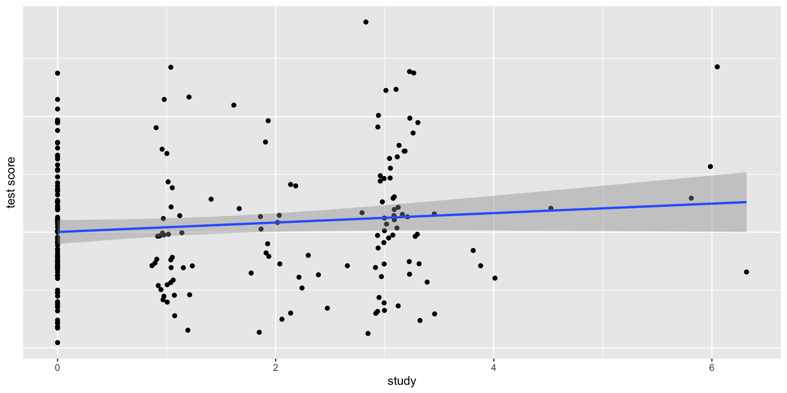
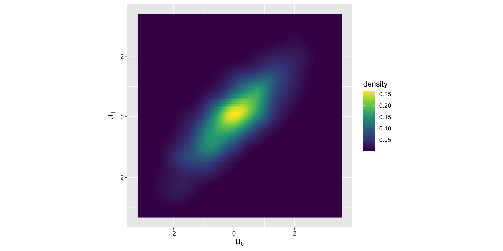
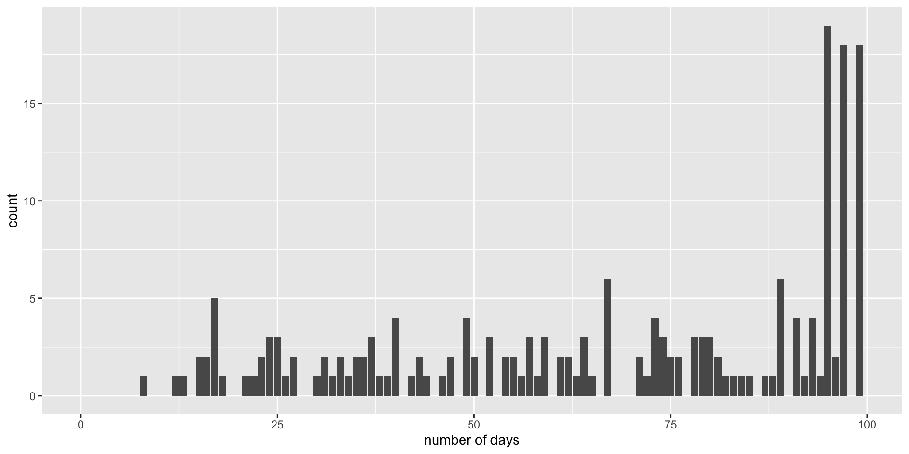

mlm

MLM review
\[{Y}_{i} = b_{0} + b_{1}X_{i} + ... +\epsilon_{i}\]
\[{Y}_{ij} = b_{0} + b_{1}X_{ij} + ... +\epsilon_{ij}\] Where j refers to some clustering or grouping variable and i refers to the observations within j

Empty model
Level 1 \[{Y}_{ij} = \beta_{0i} + \varepsilon_{ij}\]
Level 2 \[{\beta}_{0i} = \gamma_{00} + U_{0j}\]
\[{U}_{0i} \sim N(0, \tau_{00}^{2})\] \[{e}_{ii} \sim N(0, \sigma^{2})\]

\[{Y}_{ij} = \gamma_{00} + U_{0i} + \varepsilon_{ij}\]
Akin to ANOVA if we treat \(U_{0j}\) as between subjects variance & \(\varepsilon_{ij}\) as within subjects variance.
Random and fixed effects
Level 1: \[{Y}_{ij} = \beta_{0i} + \varepsilon_{ij}\]
Level 2: \[{\beta}_{0i} = \gamma_{00} + U_{0i}\] Combined: \[{Y}_{ij} = \gamma_{00} + U_{0i} + \varepsilon_{ij}\]
\(U_{0i}\) is considered a random effect, as it is varies across our grouping
\(\gamma_{00}\) is considered a fixed effect, as it is what is fixed (average) across our grouping
Level 1 predictors
Level 1 is where you have data that repeats within your grouping or clustering data. Is your cluster classrooms? Then students are level 1. Is your cluster people? Then observations are level 1.
\[{Y}_{ij} = \beta_{0i} + \beta_{1i}X_{ij} + \varepsilon_{ij}\] Notice on the subscript of X that these predictors vary across group (i) and within the group (i) So if your grouping (i) is people, then j refers to different observations.
Level 2 takes the parameters at level 1 and decomposes them into a fixed component ( \(\gamma\) ) that reflects the average and, if desired, the individual deviations around that fixed effect (U).
level 1 \[{Y}_{ij} = \beta_{0i} + \beta_{1i}X_{ij} + \varepsilon_{ij}\]
level 2 \[{\beta}_{0i} = \gamma_{00} + U_{0i}\]
\[{\beta}_{1i} = \gamma_{10}\]
Level 1:
\[{Y}_{ij} = \beta_{0i} + \beta_{1i}X_{ij} + \varepsilon_{ij}\] Level 2:
\[{\beta}_{0i} = \gamma_{00} + U_{0i}\]
\[{\beta}_{1i} = \gamma_{10} + U_{1i}\]
Combined \[{Y}_{ij} = \gamma_{00} + \gamma_{10}(X_{ij})+ U_{0i} + U_{1i}(X_{ij}) + \varepsilon_{ij}\]
Can think of a persons score divided up into a fixed component as well as the random component.
\[{\beta}_{16} = \gamma_{10} \pm U_{16}\]
Error structure
The residual structure, where the random effects are again normally distributed with a mean of zero, but this time one must also consider covariance in addition to variance.
\[\begin{pmatrix} {U}_{0i} \\ {U}_{1i} \end{pmatrix} \sim N \begin{pmatrix} 0, \tau_{00}^{2} & \tau_{01}\\ 0, \tau_{01} & \tau_{10}^{2} \end{pmatrix}\]
Note that it is possible to have a different error structure for the random effects
\[{e}_{ij} \sim N(0, \sigma^{2})\]
Multiple level 1 predictors
Level 1:
\[{Y}_{ij} = \beta_{0i} + \beta_{1i}X_{ij} + \beta_{2i}Z_{ij} + \varepsilon_{ij}\] Level 2:
\[{\beta}_{0i} = \gamma_{00} + U_{0i}\]
\[{\beta}_{1i} = \gamma_{10} + U_{1i}\] \[{\beta}_{2i} = \gamma_{20} + U_{2i}\]
Level 2 predictors
Level 1: \[{Y}_{ij} = \beta_{0i} + \beta_{1i}X_{ij} + \varepsilon_{ij}\] Level 2: \[{\beta}_{0i} = \gamma_{00} + \gamma_{01}G_{i} + U_{0i}\]
\[{\beta}_{1i} = \gamma_{10} + U_{1i}\]
Combined \[{Y}_{ij} = \gamma_{00} + \gamma_{01}G_{i}+ \gamma_{10} (X_{ij}) + U_{0i} + U_{1i}(X_{ij}) + \varepsilon_{ij}\] \[{Y}_{ij} = [\gamma_{00} + \gamma_{01}G_{i}+ U_{0i}] + [(\gamma_{10} + U_{1i})(X_{ij})] + \varepsilon_{ij}\]
Cross level interactions
level 1: \[{Y}_{ij} = \beta_{0i} + \beta_{1i}X_{ij} + \varepsilon_{ij}\] Level 2: \[{\beta}_{0i} = \gamma_{00} + \gamma_{01}G_{i} + U_{0i}\]
\[{\beta}_{1i} = \gamma_{10} + \gamma_{11}G_{j} + U_{1j}\]
\[{Y}_{ij} = \gamma_{00} + \gamma_{01}G_{i}+ \gamma_{10} (X_{ij}) + \gamma_{11}(G_{i}*X{ij}) + U_{0i} + U_{1i}(X{ij}) + \varepsilon_{ij}\] ———-
\[{Y}_{ij} = [\gamma_{00} + U_{0i} +\gamma_{01}G_{i}] + [(\gamma_{10} + \gamma_{11}G_{i}+ U_{1i})(X{ij})] + \varepsilon_{ij}\]
Centering
As a rule, each level-1 predictor is usually really 2 predictor variables. It is important to separate within-group from between group variance. Failing to do so will “smush” between and within variance to level 1.
Example: student SES at level 1, with schools at level 2. Some kids have more money than other kids in their school Some schools have more money than other schools
Fortunately it is easy to separate this
Level 1: \[{Y}_{ij} = \beta_{0i} + \beta_{1i}(X_{ij}- \bar{X_i}) + \varepsilon_{ij}\]
Level 2: \[{\beta}_{0i} = \gamma_{00} + \bar{X_i} + U_{0i}\]
\[{\beta}_{1i} = \gamma_{10} + \bar{X_i} + U_{1i}\]
Could also grand mean center the level 2 means so that the interaction has a meaningful zero point.
MLM as default and make it maximum
If you have data like this you should analyze like this! If you don’t, then you are losing information (GEE being a potential exception).
The question often is about which random effects to fit. There are multiple opinions, but mine is to start maximum, and then work downward (ie simplify) if necessary/consistent with theory. It doesn’t really hurt to include them, especially within Bayesian estimation!
MLM intuitions
Anytime you have repeated DVs you should use MLM as opposed to doing aggregation outside the model. While that should be your default, it is helpful to conceptualize why it is helpful.
- Aggregation is bad
- Regressions within regressions (ie coefficients as outcomes)
- Questions at different levels
- Variance decomposition
- Learning from other data through pooling/shrinkage
- Parameters that depend on parameters
1. Aggregation obscures hypotheses
What if people had more than 1 DV, like we do with time? What do you do with multiple items, multiple trials, multiple ____ ?
Two options: 1. Collapse and average across.
Example
Could aggragate across group
1. Aggregation obscures hypotheses
Between person H1: Do students who study more get better grades?
Within person H2: When a student studies, do they get better grades?
H1 and H2 are independent from one another! Aggregation collapses the two. When you have nested data with many DVs it is important to not aggregate.
#compositeskill
2. Regressions within regressions
Helps to take multilevel and split it into the different levels.
Level 1 is the smallest unit of analysis (students, waves, trials, family members)
Level 2 variables are what level 1 variables are “nested” in (people, schools, counties, families, dyads)
We are going to use level one components to run a regression, all the while level 1 is also estimating a regression. (Coefficents as outcomes)
Stroop example
We calculate stroop scores by looking at repeated trials of congruent vs not congruent. This is dummy coded such that the \(\beta_{1}\) reflects the average stroop effect. How much slower are people in incongruent trials?
\[Y_{i} = \beta_{0} + \beta_{1}X_{1} + \varepsilon_i\]
\[Y_{trials, i} = \beta_{0i} + \beta_{1i}X_{trial,i} + \varepsilon_{trial,i}\]
\[\beta_{0} = \gamma_{00} + U_{0i}\] \[\beta_{1} = \gamma_{10} +\gamma_{11}Age_i+ U_{1i}\]
Our B1 coefficient indexes the stroop effect. However, people differ on this stroop effect. There is some average effect (fixed effect) that people vary around. Each person has some personal \(\beta_1\), which we find using Level 1 data. From there we can also ask questions (with regressions) about that random variable.
People differ on the stroop
Code
example <- read_csv("https://raw.githubusercontent.com/josh-jackson/longitudinal-2021/master/example.csv")
example$year <- example$week
set.seed(11)
ex.random <- example %>%
dplyr::select(ID) %>%
distinct %>%
sample_n(3)
example2 <-
left_join(ex.random, example)
g2<- ggplot(example2,
aes(x = week, y = SMN7, group = ID)) + geom_point() + stat_smooth(method="lm", formula=y~1, se = FALSE) + facet_wrap( ~ID) +
geom_hline(yintercept = .13) + ylab("stroop effect") + xlab("trials") +
geom_label(label="Grand mean ", x=1,y=.13,
label.size = 0.15)
g23. Diferent levels
To sum up the first two ways to think about regression, we take a relationship that could be simplified by aggregation, and conduct regressions from regressions. (Regression inception)
The third way is to think of questions at different levels. At level 1 we can ask lower-unit questions e.g., if trials are nested within person, what predicts lengthier trials?
If level 1 is made up of repeated observations, then we can ask level 1/observation level questions like does failure at the trial level impact future trial performance.
At level 2 we can ask broader-unit questions. E.g., is age associated with stroop differences
Often level 2 is between person variables.
Both levels are simple regressions. Level 2 uses coefficients from level 1 as DVs. Level 1 variables are time varying, level 2 variables are time invariant
4. Variance decomposition
For standard regression, we think of error as existing in one big bucket called \(\varepsilon\) . Everything that we do not know goes into that bucket, from measurement error to unmeasured important factors.
For MLMs we will be breaking up ( \(\varepsilon\) ) into multiple buckets. These useful “buckets” (Us) are what we refer to as random/varying effects.
\[Y_{trials, i} = \beta_{0i} + \beta_{1i}X_{trial,i} + \varepsilon_{trial}\] \[\beta_{0} = \gamma_{00} + U_{0i}\] \[\beta_{1} = \gamma_{10} +\gamma_{11}Z_i+ U_{1i}\]

Assume a simple intercept only model where we aggregate across types of trials.
A MLM intercept only model takes what was previously chalked up to error and reassigns it into person specific “buckets”
Model for the means (like normal) and now we have a model for the variance (random effects!)
We will treat random effects as variables themselves e.g. individual differences in reaction time or stroop effect. They index how much people DIFFER on some effect. e.g. does everyone show the same stroop effect?
We can relate the random effects to other random effects e.g., do people who show an effect have a slower reaction time?
5. Shrinkage/partial pooling
We treat our group variable as coming from a population. All groups are alike (because they are from the same population), but different in their own way. Because of this it is helpful to use information from other groups to help make predictions.
We do this in standard regression where we make predictions based on values from the whole dataset (not just binned Xs). We want to pool as this leads to better predictions as we are not overfitting our data!
If we take our simplified stroop effect model (an empty model)
\[Y_{trials, i} = \beta_{0i} + \varepsilon_{trial}\]
\[\beta_{0} = \gamma_{00} + U_{0i}\]
Where does \(U_{0i}\) come from? If we calculated each by hand, through taking the average reaction time for a person i and subtracting that from the grand mean reaction time, would that equal \(U_{0i}\) ?
Complete, partial and no pooling
Complete assumes everyone is the same, with \(U_{0i}\) being zero for everyone.
No pooling is if we calculate every person’s effect with a regression, subtracting out he grand mean average.
Partial pooling is in the middle, a weighted average between the two. For those with fewer trials there is less information for a particular individual, thus the complete pooling estimate will be given more weight. If someone has a lot of data, there weighted average is closer to no pooling.
Partial pooling prevents both over and under fitting of your data, leading to increased out of sample predictions.
Complete pooling
Ignores any dependency. Doesn’t learn from others, assumes everyone is the same. Underfits the model.
No Pooling
Everyone is unqiue and we cannot learn from others. Leads to overfitting

Partial pooling aka shrinkage aka regularization

Partial pooling aka shrinkage provides the optimal amount of learning from others. Assumes people come from the same distribution but are distinct from one another.
If you have a little data, then the safe bet is to look at the average. If you have a lot of data, you can ignore others.
In a way, this is similar to Bayesian reasoning where learning is based on how much information you have about a person with other people serving as a prior.
6. Parameters that depend on other parameters
\[\text{y}_{ij} \sim \operatorname{Normal}(\mu_{ij}, \sigma)\] \[\mu_{ij} = \beta_{0[i]}\]
\[\beta_{0[i]} \sim \operatorname{Normal}({\bar \mu}, \sigma_0)\] \[{\bar \mu} \sim {\operatorname{Normal}(0, 1.5)}\] \[\sigma_0 \sim {\operatorname{Exponential}(1)}\] \[\sigma \sim {\operatorname{Exponential}(1)}\]
Hyperprior
We now have a prior for the population of effects. We typically put a prior directly on parameters. Here, because are using a multilevel model, we are interested in the population of intercepts, not just a single intercept.
Intercept in simple regression –> a (prior/posterior) distribution of possible scores
Intercept in mlm –> a distribution of group/clusters of intercepts. The population we are sampling from can have a distribution (mu, sigma), and that distribution is different from the observed distribution of mu (or sigma)
Parameters that depend on parameters
Code
# normal density
library(beyonce)
library(patchwork)
bp <- beyonce_palette(128, n = 9, type = "continuous")
p1 <-
tibble(x = seq(from = -3, to = 3, by = .1)) %>%
ggplot(aes(x = x, ymin = 0, ymax = (dnorm(x)) / max(dnorm(x)))) +
geom_ribbon(fill = bp[6], size = 0) +
annotate(geom = "text",
x = 0, y = .2,
label = "normal",
size = 7, color = bp[1]) +
annotate(geom = "text",
x = c(0, 1.5), y = .6,
label = c("italic(M)[0]", "italic(S)[0]"),
size = 7, color = bp[1], family = "Times", parse = T) +
scale_x_continuous(expand = c(0, 0)) +
theme_void() +
theme(axis.line.x = element_line(size = 0.5, color = bp[1]))
# half-normal density
p2 <-
tibble(x = seq(from = 0, to = 3, by = .01)) %>%
ggplot(aes(x = x, ymin = 0, ymax = (dnorm(x)) / max(dnorm(x)))) +
geom_ribbon(fill = bp[6], size = 0) +
annotate(geom = "text",
x = 1.5, y = .2,
label = "half-normal",
size = 7, color = bp[1]) +
annotate(geom = "text",
x = 1.5, y = .6,
label = "0*','*~italic(S)[sigma][0]",
size = 7, color = bp[1], family = "Times", parse = T) +
scale_x_continuous(expand = c(0, 0)) +
theme_void() +
theme(axis.line.x = element_line(size = 0.5, color = bp[1]))
my_arrow <- arrow(angle = 20, length = unit(0.35, "cm"), type = "closed")
# a second normal density
p3 <-
tibble(x = seq(from = -3, to = 3, by = .1)) %>%
ggplot(aes(x = x, ymin = 0, ymax = (dnorm(x)) / max(dnorm(x)))) +
geom_ribbon(fill = bp[6], size = 0) +
annotate(geom = "text",
x = 0, y = .2,
label = "normal",
size = 7, color = bp[1]) +
annotate(geom = "text",
x = c(0, 1.5), y = .6,
label = c("italic(M)[1]", "italic(S)[1]"),
size = 7, color = bp[1], family = "Times", parse = T) +
scale_x_continuous(expand = c(0, 0)) +
theme_void() +
theme(axis.line.x = element_line(size = 0.5, color = bp[1]))
# a second half-normal density
p4 <-
tibble(x = seq(from = 0, to = 3, by = .01)) %>%
ggplot(aes(x = x, ymin = 0, ymax = (dnorm(x)) / max(dnorm(x)))) +
geom_ribbon(fill = bp[6], size = 0) +
annotate(geom = "text",
x = 1.5, y = .2,
label = "half-normal",
size = 7, color = bp[1]) +
annotate(geom = "text",
x = 1.5, y = .6,
label = "0*','*~italic(S)[sigma][1]",
size = 7, color = bp[1], family = "Times", parse = T) +
scale_x_continuous(expand = c(0, 0)) +
theme_void() +
theme(axis.line.x = element_line(size = 0.5, color = bp[1]))
# four annotated arrows
p5 <-
tibble(x = c(.05, .35, .65, .95),
y = c(1, 1, 1, 1),
xend = c(.32, .4, .65, .72),
yend = c(.2, .2, .2, .2)) %>%
ggplot(aes(x = x, xend = xend,
y = y, yend = yend)) +
geom_segment(arrow = my_arrow, color = bp[1]) +
annotate(geom = "text",
x = c(.15, .35, .625, .78), y = .55,
label = "'~'",
size = 10, color = bp[1], family = "Times", parse = T) +
xlim(0, 1) +
theme_void()
# third normal density
p6 <-
tibble(x = seq(from = -3, to = 3, by = .1)) %>%
ggplot(aes(x = x, ymin = 0, ymax = (dnorm(x)) / max(dnorm(x)))) +
geom_ribbon(fill = bp[6], size = 0) +
annotate(geom = "text",
x = 0, y = .2,
label = "normal",
size = 7, color = bp[1]) +
annotate(geom = "text",
x = c(0, 1.5), y = .6,
label = c("mu[0]", "sigma[0]"),
size = 7, color = bp[1], family = "Times", parse = T) +
scale_x_continuous(expand = c(0, 0)) +
theme_void() +
theme(axis.line.x = element_line(size = 0.5, color = bp[1]))
# fourth normal density
p7 <-
tibble(x = seq(from = -3, to = 3, by = .1)) %>%
ggplot(aes(x = x, ymin = 0, ymax = (dnorm(x)) / max(dnorm(x)))) +
geom_ribbon(fill = bp[6], size = 0) +
annotate(geom = "text",
x = 0, y = .2,
label = "normal",
size = 7, color = bp[1]) +
annotate(geom = "text",
x = c(0, 1.5), y = .6,
label = c("mu[1]", "sigma[1]"),
size = 7, color = bp[1], family = "Times", parse = T) +
scale_x_continuous(expand = c(0, 0)) +
theme_void() +
theme(axis.line.x = element_line(size = 0.5, color = bp[1]))
# two annotated arrows
p8 <-
tibble(x = c(.18, .82),
y = c(1, 1),
xend = c(.36, .55),
yend = c(0, 0)) %>%
ggplot(aes(x = x, xend = xend,
y = y, yend = yend)) +
geom_segment(arrow = my_arrow, color = bp[1]) +
annotate(geom = "text",
x = c(.18, .33, .64, .77), y = .55,
label = c("'~'", "italic(j)", "'~'", "italic(j)"),
size = c(10, 7, 10, 7),
color = bp[1], family = "Times", parse = T) +
xlim(0, 1) +
theme_void()
# exponential density
p9 <-
tibble(x = seq(from = 0, to = 1, by = .01)) %>%
ggplot(aes(x = x, ymin = 0, ymax = (dexp(x, 2) / max(dexp(x, 2))))) +
geom_ribbon(fill = bp[6], size = 0) +
annotate(geom = "text",
x = .5, y = .2,
label = "exp",
size = 7, color = bp[1]) +
annotate(geom = "text",
x = .5, y = .6,
label = "italic(K)",
size = 7, color = bp[1], family = "Times", parse = T) +
scale_x_continuous(expand = c(0, 0)) +
theme_void() +
theme(axis.line.x = element_line(size = 0.5, color = bp[1]))
# likelihood formula
p10 <-
tibble(x = .5,
y = .25,
label = "beta[0][italic(j)]+beta[1][italic(j)]*italic(x)[italic(i)*'|'*italic(j)]") %>%
ggplot(aes(x = x, y = y, label = label)) +
geom_text(size = 7, color = bp[1], parse = T, family = "Times") +
scale_x_continuous(expand = c(0, 0), limits = c(0, 1)) +
ylim(0, 1) +
theme_void()
# half-normal density
p11 <-
tibble(x = seq(from = 0, to = 3, by = .01)) %>%
ggplot(aes(x = x, ymin = 0, ymax = (dnorm(x)) / max(dnorm(x)))) +
geom_ribbon(fill = bp[6], size = 0) +
annotate(geom = "text",
x = 1.5, y = .2,
label = "half-normal",
size = 7, color = bp[1]) +
annotate(geom = "text",
x = 1.5, y = .6,
label = "0*','*~italic(S)[sigma]",
size = 7, color = bp[1], family = "Times", parse = T) +
scale_x_continuous(expand = c(0, 0)) +
theme_void() +
theme(axis.line.x = element_line(size = 0.5, color = bp[1]))
# four annotated arrows
p12 <-
tibble(x = c(.43, .43, 1.5, 2.5),
y = c(1, .55, 1, 1),
xend = c(.43, 1.225, 1.5, 1.75),
yend = c(.8, .15, .2, .2)) %>%
ggplot(aes(x = x, xend = xend,
y = y, yend = yend)) +
geom_segment(arrow = my_arrow, color = bp[1]) +
annotate(geom = "text",
x = c(.3, .7, 1.38, 2), y = c(.92, .22, .65, .6),
label = c("'~'", "'='", "'='", "'~'"),
size = 10,
color = bp[1], family = "Times", parse = T) +
annotate(geom = "text",
x = .43, y = .7,
label = "nu*minute+1",
size = 7, color = bp[1], family = "Times", parse = T) +
xlim(0, 3) +
theme_void()
# student-t density
p13 <-
tibble(x = seq(from = -3, to = 3, by = .1)) %>%
ggplot(aes(x = x, ymin = 0, ymax = (dt(x, 3) / max(dt(x, 3))))) +
geom_ribbon(fill = bp[6], size = 0) +
annotate(geom = "text",
x = 0, y = .2,
label = "student t",
size = 7, color = bp[1]) +
annotate(geom = "text",
x = 0, y = .6,
label = "nu~~mu[italic(i)*'|'*italic(j)]~~sigma",
size = 7, color = bp[1], family = "Times", parse = T) +
scale_x_continuous(expand = c(0, 0)) +
theme_void() +
theme(axis.line.x = element_line(size = 0.5, color = bp[1]))
# the final annotated arrow
p14 <-
tibble(x = c(.375, .625),
y = c(1/3, 1/3),
label = c("'~'", "italic(i)*'|'*italic(j)")) %>%
ggplot(aes(x = x, y = y, label = label)) +
geom_text(size = c(10, 7), color = bp[1], parse = T, family = "Times") +
geom_segment(x = .5, xend = .5,
y = 1, yend = 0,
color = bp[1], arrow = my_arrow) +
xlim(0, 1) +
theme_void()
# some text
p15 <-
tibble(x = .5,
y = .5,
label = "italic(y)[italic(i)*'|'*italic(j)]") %>%
ggplot(aes(x = x, y = y, label = label)) +
geom_text(size = 7, color = bp[1], parse = T, family = "Times") +
xlim(0, 1) +
theme_void()
# define the layout
layout <- c(
area(t = 1, b = 2, l = 1, r = 3),
area(t = 1, b = 2, l = 5, r = 7),
area(t = 1, b = 2, l = 9, r = 11),
area(t = 1, b = 2, l = 13, r = 15),
area(t = 4, b = 5, l = 5, r = 7),
area(t = 4, b = 5, l = 9, r = 11),
area(t = 3, b = 4, l = 1, r = 15),
area(t = 7, b = 8, l = 3, r = 5),
area(t = 7, b = 8, l = 7, r = 9),
area(t = 7, b = 8, l = 11, r = 13),
area(t = 6, b = 7, l = 5, r = 11),
area(t = 10, b = 11, l = 7, r = 9),
area(t = 9, b = 10, l = 3, r = 13),
area(t = 12, b = 12, l = 7, r = 9),
area(t = 13, b = 13, l = 7, r = 9)
)
# combine and plot!
(p1 + p2 + p3 + p4 + p6 + p7 + p5 + p9 + p10 + p11 + p8 + p13 + p12 + p14 + p15) +
plot_layout(design = layout) &
ylim(0, 1) &
theme(plot.margin = margin(0, 5.5, 0, 5.5))
If we are estimating a mean, we can divide that up into two priors:
A distribution of our best guess at the mean e.g., N(3,.5) means I am very confident in my guess vs N(3,50). This is all about the mean.
A distribution that represents the spread around that mean e.g., N(0,1) suggests small spread vs (0,100) suggest people may differ a lot (Even though the distribution has the same mean).
Fixed effect describes #1 whereas random effects describe #2
library(brms)
mlm.1 <-
brm(family = gaussian,
CON ~ 1 + (1 | ID),
prior = c(prior(normal(0, 1.5), class = Intercept),
prior(normal(0, 1.5), class = sd),
prior(exponential(1), class = sigma)),
iter = 5000, warmup = 1000, chains = 4, cores = 4,
sample_prior = "yes",
data = mlm,
backend = "cmdstanr",
file = "mlm.1")If you think about parameters you are estimating the number of priors are simple. But in terms of what those priors represent, they are providing a prior on a prior. The intercept and the SD are both providing estimates of means. We could model this 1 parameter (anova or index coded) or 2 (mlm)
Family: gaussian
Links: mu = identity; sigma = identity
Formula: CON ~ 1 + (1 | ID)
Data: mlm (Number of observations: 225)
Draws: 4 chains, each with iter = 5000; warmup = 1000; thin = 1;
total post-warmup draws = 16000
Multilevel Hyperparameters:
~ID (Number of levels: 91)
Estimate Est.Error l-95% CI u-95% CI Rhat Bulk_ESS Tail_ESS
sd(Intercept) 0.06 0.01 0.05 0.07 1.00 5761 8415
Regression Coefficients:
Estimate Est.Error l-95% CI u-95% CI Rhat Bulk_ESS Tail_ESS
Intercept 0.19 0.01 0.18 0.20 1.00 8349 10553
Further Distributional Parameters:
Estimate Est.Error l-95% CI u-95% CI Rhat Bulk_ESS Tail_ESS
sigma 0.05 0.00 0.04 0.05 1.00 10318 12737
Draws were sampled using sample(hmc). For each parameter, Bulk_ESS
and Tail_ESS are effective sample size measures, and Rhat is the potential
scale reduction factor on split chains (at convergence, Rhat = 1).Notice we have one less parameter we are estimating.
Family: gaussian
Links: mu = identity; sigma = identity
Formula: CON ~ 1
Data: mlm (Number of observations: 225)
Draws: 4 chains, each with iter = 5000; warmup = 1000; thin = 1;
total post-warmup draws = 16000
Regression Coefficients:
Estimate Est.Error l-95% CI u-95% CI Rhat Bulk_ESS Tail_ESS
Intercept 0.19 0.00 0.18 0.20 1.00 16589 10784
Further Distributional Parameters:
Estimate Est.Error l-95% CI u-95% CI Rhat Bulk_ESS Tail_ESS
sigma 0.07 0.00 0.07 0.08 1.00 10191 9816
Draws were sampled using sample(hmc). For each parameter, Bulk_ESS
and Tail_ESS are effective sample size measures, and Rhat is the potential
scale reduction factor on split chains (at convergence, Rhat = 1).Notice how the intercept is the same in each of these models. Even the CIs. Conceptually they are different though. The intercept is directly modeled in the standard regression. In the MLM it is better thought of as the map of the distribution of random effects.
The population is larger than what we have. This is true for almost anything we do. We sample paradigms, we sample people, we usually never have a full population under our study. Don’t we want to model that variation?
\[\text{y}_{ij} \sim \operatorname{Normal}(\mu_{ij}, \sigma)\] \[\mu_{ij} = \beta_{0[i]}\] This parenthesis indicates we have varying intercepts that vary over individual i. Each parameter estimated needs a prior. \[\beta_{0[i]} \sim \operatorname{Normal}({\bar \mu}, \sigma_0)\] \[{\bar \mu} \sim {\operatorname{Normal}(0, 1.5)}\] \[\sigma_0 \sim {\operatorname{Exponential}(1)}\] \[\sigma \sim {\operatorname{Exponential}(1)}\]
Parameters that depend on parameters

With mlm we treated means as coming from a population of means. And thus there was a best guess of the mean (intercept) and variation around that guess (SD). With anova we ignored the variation. But we could, in bayes, still examine that variation. Lets fit an index model, where each person gets a mean.
This is similar to a “fixed effect” model, something that is popular in econometrics. It, in contrast to the random effect model, does not model random effects.
Why do we want to model random effects? Variance decomposition which leads to increased power.
Also, 1. we can include group/cluster level predictors, which fixed effect cannot. 2. it makes an assumption about whether the clusters are random or not. Psych they are almost always random (people, site, orgs) whereas for econometrics they aren’t (country, state).
Family: gaussian
Links: mu = identity; sigma = identity
Formula: CON ~ 0 + ID.f
Data: mlm (Number of observations: 225)
Draws: 2 chains, each with iter = 4000; warmup = 1000; thin = 1;
total post-warmup draws = 6000
Regression Coefficients:
Estimate Est.Error l-95% CI u-95% CI Rhat Bulk_ESS Tail_ESS
ID.f6 0.19 0.03 0.13 0.25 1.00 10924 3696
ID.f29 0.12 0.03 0.06 0.19 1.00 9118 4858
ID.f34 0.11 0.03 0.04 0.17 1.00 9838 4057
ID.f36 0.16 0.03 0.09 0.23 1.00 9798 4244
ID.f37 0.19 0.03 0.13 0.24 1.00 7867 4261
ID.f48 0.22 0.03 0.16 0.27 1.00 10144 4439
ID.f53 0.19 0.03 0.12 0.26 1.00 10557 4631
ID.f54 0.24 0.03 0.19 0.30 1.00 8629 4163
ID.f58 0.23 0.03 0.18 0.29 1.00 10315 4384
ID.f61 0.09 0.03 0.02 0.15 1.00 9320 4228
ID.f66 0.24 0.03 0.18 0.29 1.00 8576 4507
ID.f67 0.20 0.02 0.15 0.25 1.00 10307 4290
ID.f69 0.21 0.03 0.14 0.27 1.00 8653 4040
ID.f71 0.06 0.03 0.01 0.11 1.00 7862 4688
ID.f74 0.20 0.03 0.15 0.26 1.00 9842 4185
ID.f75 0.27 0.03 0.21 0.34 1.00 9410 4550
ID.f76 0.10 0.03 0.04 0.15 1.00 9381 3719
ID.f78 0.25 0.03 0.19 0.30 1.00 9223 4485
ID.f79 0.13 0.03 0.06 0.20 1.00 10651 4380
ID.f80 0.14 0.03 0.07 0.21 1.00 8803 3909
ID.f81 0.24 0.03 0.19 0.29 1.00 10760 3948
ID.f82 0.33 0.02 0.28 0.37 1.00 9687 4371
ID.f85 0.16 0.03 0.09 0.22 1.00 10246 4192
ID.f86 0.12 0.03 0.05 0.18 1.00 9680 4230
ID.f87 0.11 0.03 0.05 0.17 1.00 10253 4542
ID.f89 0.14 0.03 0.08 0.19 1.00 11259 4270
ID.f91 0.17 0.03 0.12 0.23 1.00 7766 4474
ID.f92 0.20 0.03 0.15 0.26 1.00 8776 4385
ID.f93 0.25 0.03 0.20 0.31 1.00 8575 4257
ID.f94 0.12 0.03 0.07 0.17 1.00 8959 4182
ID.f96 0.23 0.03 0.17 0.30 1.00 10164 4151
ID.f97 0.25 0.02 0.20 0.29 1.00 9816 3991
ID.f98 0.14 0.02 0.09 0.19 1.00 8659 4126
ID.f99 0.18 0.02 0.13 0.23 1.00 9669 3954
ID.f101 0.25 0.03 0.19 0.30 1.00 10001 4066
ID.f102 0.19 0.02 0.14 0.24 1.00 9703 3888
ID.f103 0.15 0.03 0.09 0.22 1.00 9353 3941
ID.f104 0.17 0.03 0.11 0.24 1.00 8637 4350
ID.f105 0.16 0.03 0.11 0.22 1.00 9213 3772
ID.f106 0.20 0.03 0.14 0.25 1.00 9950 4388
ID.f110 0.18 0.03 0.13 0.23 1.00 8712 4395
ID.f112 0.09 0.03 0.04 0.15 1.00 9954 4478
ID.f114 0.13 0.03 0.08 0.19 1.00 10938 4131
ID.f115 0.14 0.03 0.09 0.20 1.00 9488 4599
ID.f116 0.14 0.03 0.09 0.20 1.00 10366 4372
ID.f120 0.35 0.03 0.29 0.42 1.00 9298 3807
ID.f122 0.17 0.03 0.12 0.22 1.00 11020 4272
ID.f125 0.20 0.03 0.14 0.25 1.00 9336 4267
ID.f127 0.23 0.03 0.17 0.28 1.00 9474 4524
ID.f129 0.13 0.03 0.06 0.20 1.00 12581 4027
ID.f135 0.30 0.03 0.24 0.35 1.00 9638 4229
ID.f136 0.29 0.03 0.24 0.34 1.00 10695 4402
ID.f137 0.29 0.03 0.23 0.36 1.00 8942 4181
ID.f140 0.13 0.03 0.06 0.19 1.00 8470 4316
ID.f141 0.19 0.03 0.13 0.26 1.00 9389 4196
ID.f142 0.18 0.03 0.11 0.24 1.00 10253 3800
ID.f143 0.31 0.03 0.25 0.38 1.00 10054 3865
ID.f144 0.17 0.03 0.11 0.24 1.00 7105 4359
ID.f146 0.21 0.03 0.14 0.28 1.00 9564 3766
ID.f149 0.23 0.03 0.16 0.30 1.00 10981 3875
ID.f150 0.20 0.03 0.13 0.27 1.00 10083 3732
ID.f152 0.22 0.03 0.16 0.29 1.00 9769 3841
ID.f153 0.15 0.03 0.08 0.21 1.00 9864 4201
ID.f155 0.14 0.03 0.08 0.21 1.00 10010 4122
ID.f156 0.14 0.03 0.08 0.19 1.00 11558 4147
ID.f159 0.12 0.03 0.06 0.19 1.00 9704 4022
ID.f160 0.18 0.03 0.11 0.24 1.00 8643 3855
ID.f162 0.39 0.03 0.34 0.45 1.00 9210 4318
ID.f163 0.13 0.03 0.07 0.20 1.00 9529 4130
ID.f165 0.20 0.03 0.13 0.26 1.00 9787 4099
ID.f167 0.13 0.03 0.07 0.20 1.00 9169 4571
ID.f169 0.24 0.03 0.18 0.31 1.00 8591 4415
ID.f171 0.23 0.03 0.16 0.29 1.00 9039 4176
ID.f174 0.26 0.03 0.20 0.33 1.00 9751 4180
ID.f182 0.19 0.03 0.12 0.25 1.00 8801 4093
ID.f187 0.06 0.03 -0.00 0.13 1.00 9681 4140
ID.f189 0.22 0.03 0.15 0.29 1.00 7780 4111
ID.f190 0.13 0.03 0.06 0.19 1.00 9980 4381
ID.f193 0.21 0.03 0.14 0.27 1.00 9616 4207
ID.f194 0.12 0.03 0.05 0.18 1.00 10107 4273
ID.f201 0.19 0.03 0.12 0.25 1.00 10278 4100
ID.f204 0.29 0.03 0.22 0.35 1.00 8399 4322
ID.f205 0.19 0.03 0.13 0.26 1.00 9627 4526
ID.f208 0.20 0.03 0.14 0.27 1.00 11281 4034
ID.f209 0.21 0.03 0.14 0.28 1.00 10907 4106
ID.f211 0.14 0.03 0.07 0.21 1.00 9153 4547
ID.f214 0.28 0.03 0.21 0.34 1.00 9734 4248
ID.f219 0.23 0.03 0.16 0.30 1.00 10046 3937
ID.f222 0.14 0.03 0.07 0.20 1.00 9970 4305
ID.f223 0.17 0.03 0.10 0.23 1.00 10288 4224
ID.f229 0.14 0.03 0.08 0.21 1.00 10279 4164
Further Distributional Parameters:
Estimate Est.Error l-95% CI u-95% CI Rhat Bulk_ESS Tail_ESS
sigma 0.05 0.00 0.04 0.05 1.00 3686 4264
Draws were sampled using sample(hmc). For each parameter, Bulk_ESS
and Tail_ESS are effective sample size measures, and Rhat is the potential
scale reduction factor on split chains (at convergence, Rhat = 1).Partial pooling/Shrinkage
\(\sigma_0\) (our random effect) can help turn on/off/adjust shrinkage.
Setting SD to zero says everyone is the same. Infinite SD suggests no pooling (and major differences in pop values). In the middle gives you partial pooling.
We use our prior of \(\sigma_0\) plus our data to get an estimate of \(\beta_{0[j]}\). This is how we accurately partial pool.
Partial pooling/Shrinkage
\[\text{y}_{ij} \sim \operatorname{Normal}(\mu_i, \sigma_i)\]
\[\mu_i = \beta_{0[i]}\]
\[\beta_{0[i]} \sim \operatorname{Normal}({\bar \mu}, \sigma_0)\] \[{\bar \mu} \sim {\operatorname{Normal}(0, 1.5)}\]
\[\sigma_0 \sim {\operatorname{Normal}(0, 1.5)}\]
\[\sigma \sim {\operatorname{Exponential}(1)}\]
working with mlm posterior
Family: gaussian
Links: mu = identity; sigma = identity
Formula: CON ~ 1 + (1 | ID)
Data: mlm (Number of observations: 225)
Draws: 4 chains, each with iter = 5000; warmup = 1000; thin = 1;
total post-warmup draws = 16000
Multilevel Hyperparameters:
~ID (Number of levels: 91)
Estimate Est.Error l-95% CI u-95% CI Rhat Bulk_ESS Tail_ESS
sd(Intercept) 0.06 0.01 0.05 0.07 1.00 5761 8415
Regression Coefficients:
Estimate Est.Error l-95% CI u-95% CI Rhat Bulk_ESS Tail_ESS
Intercept 0.19 0.01 0.18 0.20 1.00 8349 10553
Further Distributional Parameters:
Estimate Est.Error l-95% CI u-95% CI Rhat Bulk_ESS Tail_ESS
sigma 0.05 0.00 0.04 0.05 1.00 10318 12737
Draws were sampled using sample(hmc). For each parameter, Bulk_ESS
and Tail_ESS are effective sample size measures, and Rhat is the potential
scale reduction factor on split chains (at convergence, Rhat = 1). [1] "b_Intercept" "sd_ID__Intercept" "sigma"
[4] "Intercept" "r_ID[6,Intercept]" "r_ID[29,Intercept]"
[7] "r_ID[34,Intercept]" "r_ID[36,Intercept]" "r_ID[37,Intercept]"
[10] "r_ID[48,Intercept]" "r_ID[53,Intercept]" "r_ID[54,Intercept]"
[13] "r_ID[58,Intercept]" "r_ID[61,Intercept]" "r_ID[66,Intercept]"
[16] "r_ID[67,Intercept]" "r_ID[69,Intercept]" "r_ID[71,Intercept]"
[19] "r_ID[74,Intercept]" "r_ID[75,Intercept]" "r_ID[76,Intercept]"
[22] "r_ID[78,Intercept]" "r_ID[79,Intercept]" "r_ID[80,Intercept]"
[25] "r_ID[81,Intercept]" "r_ID[82,Intercept]" "r_ID[85,Intercept]"
[28] "r_ID[86,Intercept]" "r_ID[87,Intercept]" "r_ID[89,Intercept]"
[31] "r_ID[91,Intercept]" "r_ID[92,Intercept]" "r_ID[93,Intercept]"
[34] "r_ID[94,Intercept]" "r_ID[96,Intercept]" "r_ID[97,Intercept]"
[37] "r_ID[98,Intercept]" "r_ID[99,Intercept]" "r_ID[101,Intercept]"
[40] "r_ID[102,Intercept]" "r_ID[103,Intercept]" "r_ID[104,Intercept]"
[43] "r_ID[105,Intercept]" "r_ID[106,Intercept]" "r_ID[110,Intercept]"
[46] "r_ID[112,Intercept]" "r_ID[114,Intercept]" "r_ID[115,Intercept]"
[49] "r_ID[116,Intercept]" "r_ID[120,Intercept]" "r_ID[122,Intercept]"
[52] "r_ID[125,Intercept]" "r_ID[127,Intercept]" "r_ID[129,Intercept]"
[55] "r_ID[135,Intercept]" "r_ID[136,Intercept]" "r_ID[137,Intercept]"
[58] "r_ID[140,Intercept]" "r_ID[141,Intercept]" "r_ID[142,Intercept]"
[61] "r_ID[143,Intercept]" "r_ID[144,Intercept]" "r_ID[146,Intercept]"
[64] "r_ID[149,Intercept]" "r_ID[150,Intercept]" "r_ID[152,Intercept]"
[67] "r_ID[153,Intercept]" "r_ID[155,Intercept]" "r_ID[156,Intercept]"
[70] "r_ID[159,Intercept]" "r_ID[160,Intercept]" "r_ID[162,Intercept]"
[73] "r_ID[163,Intercept]" "r_ID[165,Intercept]" "r_ID[167,Intercept]"
[76] "r_ID[169,Intercept]" "r_ID[171,Intercept]" "r_ID[174,Intercept]"
[79] "r_ID[182,Intercept]" "r_ID[187,Intercept]" "r_ID[189,Intercept]"
[82] "r_ID[190,Intercept]" "r_ID[193,Intercept]" "r_ID[194,Intercept]"
[85] "r_ID[201,Intercept]" "r_ID[204,Intercept]" "r_ID[205,Intercept]"
[88] "r_ID[208,Intercept]" "r_ID[209,Intercept]" "r_ID[211,Intercept]"
[91] "r_ID[214,Intercept]" "r_ID[219,Intercept]" "r_ID[222,Intercept]"
[94] "r_ID[223,Intercept]" "r_ID[229,Intercept]" "prior_Intercept"
[97] "prior_sigma" "prior_sd_ID" "lprior"
[100] "lp__" "accept_stat__" "treedepth__"
[103] "stepsize__" "divergent__" "n_leapfrog__"
[106] "energy__" # A tibble: 1,456,000 × 6
# Groups: ID, term [91]
ID term r_ID .chain .iteration .draw
<int> <chr> <dbl> <int> <int> <int>
1 6 Intercept 0.0133 1 1 1
2 6 Intercept -0.00438 1 2 2
3 6 Intercept 0.0214 1 3 3
4 6 Intercept 0.00738 1 4 4
5 6 Intercept -0.0173 1 5 5
6 6 Intercept -0.0386 1 6 6
7 6 Intercept 0.0233 1 7 7
8 6 Intercept -0.0351 1 8 8
9 6 Intercept 0.0346 1 9 9
10 6 Intercept -0.0349 1 10 10
# ℹ 1,455,990 more rows16000 samples (4 chains * 4k iterations) * 91 people
# A tibble: 1,456,000 × 5
# Groups: ID [91]
ID r_ID .chain .iteration .draw
<int> <dbl> <int> <int> <int>
1 6 0.0133 1 1 1
2 6 -0.00438 1 2 2
3 6 0.0214 1 3 3
4 6 0.00738 1 4 4
5 6 -0.0173 1 5 5
6 6 -0.0386 1 6 6
7 6 0.0233 1 7 7
8 6 -0.0351 1 8 8
9 6 0.0346 1 9 9
10 6 -0.0349 1 10 10
# ℹ 1,455,990 more rows# A tibble: 91 × 8
ID term r_ID .lower .upper .width .point .interval
<int> <chr> <dbl> <dbl> <dbl> <dbl> <chr> <chr>
1 6 Intercept 0.000562 -0.0491 0.0504 0.95 median qi
2 29 Intercept -0.0479 -0.106 0.0101 0.95 median qi
3 34 Intercept -0.0614 -0.118 -0.00512 0.95 median qi
4 36 Intercept -0.0219 -0.0784 0.0347 0.95 median qi
5 37 Intercept -0.00311 -0.0523 0.0464 0.95 median qi
6 48 Intercept 0.0238 -0.0266 0.0727 0.95 median qi
7 53 Intercept 0.000709 -0.0557 0.0567 0.95 median qi
8 54 Intercept 0.0454 -0.00412 0.0944 0.95 median qi
9 58 Intercept 0.0369 -0.0122 0.0861 0.95 median qi
10 61 Intercept -0.0749 -0.133 -0.0166 0.95 median qi
# ℹ 81 more rowsCode
mlm.1 %>%
spread_draws(r_ID[ID, term]) %>%
left_join(mlm %>% select (ID, CON) %>% group_by(ID) %>% mutate(CON = mean(CON))) %>%
median_qi() %>%
ggplot(aes(x = ID)) +
geom_point(aes(y = r_ID), color = "orange2") +
geom_point(aes(y = CON), shape = 1) +
labs(title =
"orange is model based, black circles are observed means")Think back to {lme4} and ranef coef and fixef functions.
What do each of these describe?
What scale is our random effect (typically) in?
# A tibble: 1,456,000 × 7
# Groups: ID, term [91]
.chain .iteration .draw b_Intercept ID term r_ID
<int> <int> <int> <dbl> <int> <chr> <dbl>
1 1 1 1 0.189 6 Intercept 0.0133
2 1 1 1 0.189 29 Intercept -0.0511
3 1 1 1 0.189 34 Intercept -0.0897
4 1 1 1 0.189 36 Intercept -0.0200
5 1 1 1 0.189 37 Intercept 0.0412
6 1 1 1 0.189 48 Intercept 0.0104
7 1 1 1 0.189 53 Intercept 0.0844
8 1 1 1 0.189 54 Intercept -0.00270
9 1 1 1 0.189 58 Intercept 0.0389
10 1 1 1 0.189 61 Intercept -0.0712
# ℹ 1,455,990 more rows# A tibble: 1,456,000 × 8
# Groups: ID, term [91]
.chain .iteration .draw b_Intercept ID term r_ID person_I
<int> <int> <int> <dbl> <int> <chr> <dbl> <dbl>
1 1 1 1 0.189 6 Intercept 0.0133 0.203
2 1 1 1 0.189 29 Intercept -0.0511 0.138
3 1 1 1 0.189 34 Intercept -0.0897 0.0997
4 1 1 1 0.189 36 Intercept -0.0200 0.169
5 1 1 1 0.189 37 Intercept 0.0412 0.230
6 1 1 1 0.189 48 Intercept 0.0104 0.200
7 1 1 1 0.189 53 Intercept 0.0844 0.274
8 1 1 1 0.189 54 Intercept -0.00270 0.187
9 1 1 1 0.189 58 Intercept 0.0389 0.228
10 1 1 1 0.189 61 Intercept -0.0712 0.118
# ℹ 1,455,990 more rowsCode
mlm.1 %>%
spread_draws(b_Intercept, r_ID[ID, term]) %>%
mutate(person_I = b_Intercept + r_ID) %>%
left_join(mlm %>% select (ID, CON) %>% group_by(ID) %>% mutate(CON = mean(CON))) %>%
median_qi() %>%
ggplot(aes(x = ID)) +
geom_point(aes(y = person_I), color = "orange2") +
geom_point(aes(y = CON), shape = 1) +
labs(title =
"orange is model based, black circles are observed means") +
geom_hline(yintercept =0.1849846)Set prior for random effect to almost zero for complete pooling.
Code
mlm.1p <-
brm(family = gaussian,
CON ~ 1 + (1 | ID),
prior = c(prior(normal(0, 1.5), class = Intercept),
prior(normal(0, .00001), class = sd),
prior(exponential(1), class = sigma)),
iter = 4000, warmup = 1000, chains = 4, cores = 4,
sample_prior = "yes",
file = "mlm.1p",
backend = "cmdstanr",
data = mlm) Family: gaussian
Links: mu = identity; sigma = identity
Formula: CON ~ 1 + (1 | ID)
Data: mlm (Number of observations: 225)
Draws: 4 chains, each with iter = 4000; warmup = 1000; thin = 1;
total post-warmup draws = 12000
Multilevel Hyperparameters:
~ID (Number of levels: 91)
Estimate Est.Error l-95% CI u-95% CI Rhat Bulk_ESS Tail_ESS
sd(Intercept) 0.00 0.00 0.00 0.00 1.00 8952 6581
Regression Coefficients:
Estimate Est.Error l-95% CI u-95% CI Rhat Bulk_ESS Tail_ESS
Intercept 0.19 0.00 0.18 0.20 1.00 19393 8474
Further Distributional Parameters:
Estimate Est.Error l-95% CI u-95% CI Rhat Bulk_ESS Tail_ESS
sigma 0.07 0.00 0.07 0.08 1.00 21537 7644
Draws were sampled using sample(hmc). For each parameter, Bulk_ESS
and Tail_ESS are effective sample size measures, and Rhat is the potential
scale reduction factor on split chains (at convergence, Rhat = 1).Code
mlm.1p %>%
spread_draws(b_Intercept, r_ID[ID, term]) %>%
mutate(person_I = b_Intercept + r_ID) %>%
left_join(mlm %>% select (ID, CON) %>% group_by(ID) %>% mutate(CON = mean(CON))) %>%
median_qi() %>%
ggplot(aes(x = ID)) +
geom_point(aes(y = person_I), color = "orange2") +
geom_point(aes(y = CON), shape = 1) +
labs(title =
"complete pooling") +
geom_hline(yintercept =0.189846)No pooling means you are not learning from other data, which is by default not an MLM model. We already fit this fixed effects no intercept model above.
Family: gaussian
Links: mu = identity; sigma = identity
Formula: CON ~ 0 + ID.f
Data: mlm (Number of observations: 225)
Draws: 2 chains, each with iter = 4000; warmup = 1000; thin = 1;
total post-warmup draws = 6000
Regression Coefficients:
Estimate Est.Error l-95% CI u-95% CI Rhat Bulk_ESS Tail_ESS
ID.f6 0.19 0.03 0.13 0.25 1.00 10924 3696
ID.f29 0.12 0.03 0.06 0.19 1.00 9118 4858
ID.f34 0.11 0.03 0.04 0.17 1.00 9838 4057
ID.f36 0.16 0.03 0.09 0.23 1.00 9798 4244
ID.f37 0.19 0.03 0.13 0.24 1.00 7867 4261
ID.f48 0.22 0.03 0.16 0.27 1.00 10144 4439
ID.f53 0.19 0.03 0.12 0.26 1.00 10557 4631
ID.f54 0.24 0.03 0.19 0.30 1.00 8629 4163
ID.f58 0.23 0.03 0.18 0.29 1.00 10315 4384
ID.f61 0.09 0.03 0.02 0.15 1.00 9320 4228
ID.f66 0.24 0.03 0.18 0.29 1.00 8576 4507
ID.f67 0.20 0.02 0.15 0.25 1.00 10307 4290
ID.f69 0.21 0.03 0.14 0.27 1.00 8653 4040
ID.f71 0.06 0.03 0.01 0.11 1.00 7862 4688
ID.f74 0.20 0.03 0.15 0.26 1.00 9842 4185
ID.f75 0.27 0.03 0.21 0.34 1.00 9410 4550
ID.f76 0.10 0.03 0.04 0.15 1.00 9381 3719
ID.f78 0.25 0.03 0.19 0.30 1.00 9223 4485
ID.f79 0.13 0.03 0.06 0.20 1.00 10651 4380
ID.f80 0.14 0.03 0.07 0.21 1.00 8803 3909
ID.f81 0.24 0.03 0.19 0.29 1.00 10760 3948
ID.f82 0.33 0.02 0.28 0.37 1.00 9687 4371
ID.f85 0.16 0.03 0.09 0.22 1.00 10246 4192
ID.f86 0.12 0.03 0.05 0.18 1.00 9680 4230
ID.f87 0.11 0.03 0.05 0.17 1.00 10253 4542
ID.f89 0.14 0.03 0.08 0.19 1.00 11259 4270
ID.f91 0.17 0.03 0.12 0.23 1.00 7766 4474
ID.f92 0.20 0.03 0.15 0.26 1.00 8776 4385
ID.f93 0.25 0.03 0.20 0.31 1.00 8575 4257
ID.f94 0.12 0.03 0.07 0.17 1.00 8959 4182
ID.f96 0.23 0.03 0.17 0.30 1.00 10164 4151
ID.f97 0.25 0.02 0.20 0.29 1.00 9816 3991
ID.f98 0.14 0.02 0.09 0.19 1.00 8659 4126
ID.f99 0.18 0.02 0.13 0.23 1.00 9669 3954
ID.f101 0.25 0.03 0.19 0.30 1.00 10001 4066
ID.f102 0.19 0.02 0.14 0.24 1.00 9703 3888
ID.f103 0.15 0.03 0.09 0.22 1.00 9353 3941
ID.f104 0.17 0.03 0.11 0.24 1.00 8637 4350
ID.f105 0.16 0.03 0.11 0.22 1.00 9213 3772
ID.f106 0.20 0.03 0.14 0.25 1.00 9950 4388
ID.f110 0.18 0.03 0.13 0.23 1.00 8712 4395
ID.f112 0.09 0.03 0.04 0.15 1.00 9954 4478
ID.f114 0.13 0.03 0.08 0.19 1.00 10938 4131
ID.f115 0.14 0.03 0.09 0.20 1.00 9488 4599
ID.f116 0.14 0.03 0.09 0.20 1.00 10366 4372
ID.f120 0.35 0.03 0.29 0.42 1.00 9298 3807
ID.f122 0.17 0.03 0.12 0.22 1.00 11020 4272
ID.f125 0.20 0.03 0.14 0.25 1.00 9336 4267
ID.f127 0.23 0.03 0.17 0.28 1.00 9474 4524
ID.f129 0.13 0.03 0.06 0.20 1.00 12581 4027
ID.f135 0.30 0.03 0.24 0.35 1.00 9638 4229
ID.f136 0.29 0.03 0.24 0.34 1.00 10695 4402
ID.f137 0.29 0.03 0.23 0.36 1.00 8942 4181
ID.f140 0.13 0.03 0.06 0.19 1.00 8470 4316
ID.f141 0.19 0.03 0.13 0.26 1.00 9389 4196
ID.f142 0.18 0.03 0.11 0.24 1.00 10253 3800
ID.f143 0.31 0.03 0.25 0.38 1.00 10054 3865
ID.f144 0.17 0.03 0.11 0.24 1.00 7105 4359
ID.f146 0.21 0.03 0.14 0.28 1.00 9564 3766
ID.f149 0.23 0.03 0.16 0.30 1.00 10981 3875
ID.f150 0.20 0.03 0.13 0.27 1.00 10083 3732
ID.f152 0.22 0.03 0.16 0.29 1.00 9769 3841
ID.f153 0.15 0.03 0.08 0.21 1.00 9864 4201
ID.f155 0.14 0.03 0.08 0.21 1.00 10010 4122
ID.f156 0.14 0.03 0.08 0.19 1.00 11558 4147
ID.f159 0.12 0.03 0.06 0.19 1.00 9704 4022
ID.f160 0.18 0.03 0.11 0.24 1.00 8643 3855
ID.f162 0.39 0.03 0.34 0.45 1.00 9210 4318
ID.f163 0.13 0.03 0.07 0.20 1.00 9529 4130
ID.f165 0.20 0.03 0.13 0.26 1.00 9787 4099
ID.f167 0.13 0.03 0.07 0.20 1.00 9169 4571
ID.f169 0.24 0.03 0.18 0.31 1.00 8591 4415
ID.f171 0.23 0.03 0.16 0.29 1.00 9039 4176
ID.f174 0.26 0.03 0.20 0.33 1.00 9751 4180
ID.f182 0.19 0.03 0.12 0.25 1.00 8801 4093
ID.f187 0.06 0.03 -0.00 0.13 1.00 9681 4140
ID.f189 0.22 0.03 0.15 0.29 1.00 7780 4111
ID.f190 0.13 0.03 0.06 0.19 1.00 9980 4381
ID.f193 0.21 0.03 0.14 0.27 1.00 9616 4207
ID.f194 0.12 0.03 0.05 0.18 1.00 10107 4273
ID.f201 0.19 0.03 0.12 0.25 1.00 10278 4100
ID.f204 0.29 0.03 0.22 0.35 1.00 8399 4322
ID.f205 0.19 0.03 0.13 0.26 1.00 9627 4526
ID.f208 0.20 0.03 0.14 0.27 1.00 11281 4034
ID.f209 0.21 0.03 0.14 0.28 1.00 10907 4106
ID.f211 0.14 0.03 0.07 0.21 1.00 9153 4547
ID.f214 0.28 0.03 0.21 0.34 1.00 9734 4248
ID.f219 0.23 0.03 0.16 0.30 1.00 10046 3937
ID.f222 0.14 0.03 0.07 0.20 1.00 9970 4305
ID.f223 0.17 0.03 0.10 0.23 1.00 10288 4224
ID.f229 0.14 0.03 0.08 0.21 1.00 10279 4164
Further Distributional Parameters:
Estimate Est.Error l-95% CI u-95% CI Rhat Bulk_ESS Tail_ESS
sigma 0.05 0.00 0.04 0.05 1.00 3686 4264
Draws were sampled using sample(hmc). For each parameter, Bulk_ESS
and Tail_ESS are effective sample size measures, and Rhat is the potential
scale reduction factor on split chains (at convergence, Rhat = 1).Code
data2<-mlm %>% select(ID, CON) %>%
group_by(ID) %>%
mutate(CON = mean(CON)) %>%
slice(1)
mlm.id %>% tidy_draws() %>%
pivot_longer(b_ID.f6:b_ID.f229, names_to = "ID", values_to = "CON_I", names_prefix = "b_ID.f", names_transform = list(ID = as.integer)) %>%
left_join(data2) %>%
group_by(ID) %>%
median_qi() %>%
ggplot(aes(x = ID)) +
geom_point(aes(y = CON_I), color = "orange2") +
geom_point(aes(y = CON), shape = 1) +
labs(title =
"NO pooling") +
geom_hline(yintercept =0.1849846)MLM will automatically create the best fitting model – balancing between over and under fitting. It identifies the value of sigma of the random effect that is ideal.
This “knob” can be manually turned to different values and we can look at the fit of the model via loo or wais. But we dont need to!
level 1 predictors
\[\text{y}_{ij} \sim \operatorname{Normal}(\mu_i, \sigma)\] \[\mu_{ij} = \beta_{0[i]} + \beta_{1[i]}Time_{ij}\]
\[\beta_{0[i]} \sim \operatorname{Normal}({\bar \mu}, \sigma_0)\] \[{\bar \mu} \sim {\operatorname{Normal}(0, 1.5)}\] \[\sigma_0 \sim {\operatorname{Exponential}(1)}\] \[\beta_{1[i]} \sim {\operatorname{Normal}(0, 1.5)}\] \[\sigma \sim {\operatorname{Exponential}(1)}\]
Notice how the slope variable was not a hyper prior. What does that mean? That means it is not random. People can still differ, but only based on the equation we set up for it. That is, there are fixed effects based on different gammas, but not Us to represent random variation. To do so we would need a parameter for that, and we dont have it.
mlm.3 <-
brm(family = gaussian,
CON ~ 1 + time + (1 | ID),
prior = c(prior(normal(0, 1.5), class = Intercept),
prior(normal(0, 1.5), class = b),
prior(normal(0, 1.5), class = sd),
prior(exponential(1), class = sigma)),
iter = 4000, warmup = 1000, chains = 4, cores = 4,
sample_prior = "yes",
file = "mlm.3",
backend = "cmdstanr",
data = mlm) Family: gaussian
Links: mu = identity; sigma = identity
Formula: CON ~ 1 + time + (1 | ID)
Data: mlm (Number of observations: 225)
Draws: 4 chains, each with iter = 4000; warmup = 1000; thin = 1;
total post-warmup draws = 12000
Multilevel Hyperparameters:
~ID (Number of levels: 91)
Estimate Est.Error l-95% CI u-95% CI Rhat Bulk_ESS Tail_ESS
sd(Intercept) 0.06 0.01 0.05 0.07 1.00 4193 7476
Regression Coefficients:
Estimate Est.Error l-95% CI u-95% CI Rhat Bulk_ESS Tail_ESS
Intercept 0.19 0.01 0.18 0.21 1.00 6994 8994
time -0.00 0.00 -0.01 0.00 1.00 14742 9789
Further Distributional Parameters:
Estimate Est.Error l-95% CI u-95% CI Rhat Bulk_ESS Tail_ESS
sigma 0.05 0.00 0.04 0.05 1.00 8013 9414
Draws were sampled using sample(hmc). For each parameter, Bulk_ESS
and Tail_ESS are effective sample size measures, and Rhat is the potential
scale reduction factor on split chains (at convergence, Rhat = 1). Estimate Est.Error Q2.5 Q97.5
b_Intercept 1.940041e-01 0.007826677 1.786149e-01 0.209344725
b_time -2.643092e-03 0.002177587 -6.925225e-03 0.001649079
sd_ID__Intercept 5.649883e-02 0.005517628 4.631454e-02 0.067848202
sigma 4.734761e-02 0.002936514 4.202114e-02 0.053612102
Intercept 1.892113e-01 0.006815445 1.758717e-01 0.202529600
r_ID[6,Intercept] 6.894050e-03 0.025632477 -4.255819e-02 0.057214167
r_ID[29,Intercept] -4.317045e-02 0.029410532 -1.006675e-01 0.014857105
r_ID[34,Intercept] -5.496105e-02 0.029746469 -1.128902e-01 0.004024982
r_ID[36,Intercept] -2.075095e-02 0.029930676 -7.989738e-02 0.037928447
r_ID[37,Intercept] 2.959034e-03 0.025584463 -4.766372e-02 0.053536242
r_ID[48,Intercept] 2.934054e-02 0.025564624 -2.058067e-02 0.079359287
r_ID[53,Intercept] 5.540256e-03 0.029425227 -5.144062e-02 0.062757537
r_ID[54,Intercept] 4.985518e-02 0.025833256 -6.674044e-04 0.100699050
r_ID[58,Intercept] 3.808043e-02 0.025174264 -1.137551e-02 0.088185725
r_ID[61,Intercept] -6.931222e-02 0.030108863 -1.272552e-01 -0.009055818
r_ID[66,Intercept] 4.185027e-02 0.026067018 -9.074979e-03 0.092666637
r_ID[67,Intercept] 1.223557e-02 0.022633214 -3.214001e-02 0.056104997
r_ID[69,Intercept] 1.226932e-02 0.029667775 -4.596177e-02 0.071293052
r_ID[71,Intercept] -1.049470e-01 0.025777505 -1.555616e-01 -0.053859977
r_ID[74,Intercept] 1.413066e-02 0.025052025 -3.610169e-02 0.063177775
r_ID[75,Intercept] 5.966435e-02 0.029682943 9.122672e-04 0.117949300
r_ID[76,Intercept] -7.273943e-02 0.025845048 -1.237458e-01 -0.021956278
r_ID[78,Intercept] 4.721165e-02 0.025409451 -2.031112e-03 0.096977370
r_ID[79,Intercept] -4.323185e-02 0.028792257 -9.884914e-02 0.012840262
r_ID[80,Intercept] -3.360304e-02 0.029631554 -9.249670e-02 0.024892937
r_ID[81,Intercept] 4.425246e-02 0.025313321 -5.117839e-03 0.093899587
r_ID[82,Intercept] 1.194751e-01 0.023401803 7.375427e-02 0.165049050
r_ID[85,Intercept] -2.656583e-02 0.029255811 -8.330911e-02 0.031289555
r_ID[86,Intercept] -5.658335e-02 0.029450409 -1.140732e-01 0.001370705
r_ID[87,Intercept] -5.910435e-02 0.029014664 -1.155641e-01 -0.002082889
r_ID[89,Intercept] -4.504349e-02 0.025147000 -9.468816e-02 0.004342086
r_ID[91,Intercept] -1.497194e-02 0.025330625 -6.443315e-02 0.034996730
r_ID[92,Intercept] 9.446729e-03 0.025267257 -4.043862e-02 0.058558775
r_ID[93,Intercept] 5.056990e-02 0.024888297 1.763072e-03 0.099418635
r_ID[94,Intercept] -5.880935e-02 0.025335247 -1.084745e-01 -0.008453616
r_ID[96,Intercept] 2.833736e-02 0.029139238 -2.908832e-02 0.084802120
r_ID[97,Intercept] 4.918658e-02 0.022604557 4.755043e-03 0.093747605
r_ID[98,Intercept] -4.283807e-02 0.022794542 -8.700858e-02 0.001808808
r_ID[99,Intercept] -6.916184e-03 0.022416641 -5.110949e-02 0.036865817
r_ID[101,Intercept] 4.376512e-02 0.025457997 -5.879864e-03 0.093417747
r_ID[102,Intercept] -2.004694e-03 0.022524556 -4.581805e-02 0.042389705
r_ID[103,Intercept] -2.816223e-02 0.028814760 -8.433012e-02 0.028689640
r_ID[104,Intercept] -1.368979e-02 0.028809435 -7.062960e-02 0.043247127
r_ID[105,Intercept] -2.319347e-02 0.025247822 -7.279866e-02 0.026286165
r_ID[106,Intercept] 5.606195e-03 0.025438938 -4.396306e-02 0.055691857
r_ID[110,Intercept] -6.040176e-03 0.025358673 -5.521733e-02 0.043524717
r_ID[112,Intercept] -7.817622e-02 0.025361370 -1.279663e-01 -0.028702283
r_ID[114,Intercept] -4.693322e-02 0.025277165 -9.660709e-02 0.002394822
r_ID[115,Intercept] -3.974349e-02 0.025565576 -8.929331e-02 0.009810768
r_ID[116,Intercept] -3.748329e-02 0.025295803 -8.713662e-02 0.011935252
r_ID[120,Intercept] 1.178859e-01 0.030366258 5.807562e-02 0.177008050
r_ID[122,Intercept] -1.668675e-02 0.024795466 -6.497346e-02 0.032179132
r_ID[125,Intercept] 3.978368e-03 0.024992491 -4.482118e-02 0.052190010
r_ID[127,Intercept] 2.903281e-02 0.025264905 -2.036774e-02 0.077879025
r_ID[129,Intercept] -4.621880e-02 0.029096849 -1.037195e-01 0.009960738
r_ID[135,Intercept] 8.624209e-02 0.025337232 3.609033e-02 0.135507875
r_ID[136,Intercept] 8.118360e-02 0.025158128 3.068991e-02 0.129971475
r_ID[137,Intercept] 7.377812e-02 0.029745954 1.539976e-02 0.131394075
r_ID[140,Intercept] -4.836868e-02 0.029448928 -1.060563e-01 0.009671810
r_ID[141,Intercept] 7.081259e-04 0.028982459 -5.557317e-02 0.057309203
r_ID[142,Intercept] -9.197605e-03 0.028776163 -6.584851e-02 0.047713220
r_ID[143,Intercept] 8.718954e-02 0.029738077 2.829227e-02 0.145901050
r_ID[144,Intercept] -1.220954e-02 0.028913189 -6.807766e-02 0.044226482
r_ID[146,Intercept] 1.452549e-02 0.029340069 -4.306062e-02 0.072288810
r_ID[149,Intercept] 2.789416e-02 0.029548885 -2.993960e-02 0.086790057
r_ID[150,Intercept] 8.209031e-03 0.028979915 -4.894788e-02 0.064855690
r_ID[152,Intercept] 2.224967e-02 0.029026980 -3.572727e-02 0.078511828
r_ID[153,Intercept] -3.240322e-02 0.029044160 -8.925863e-02 0.025473330
r_ID[155,Intercept] -3.428796e-02 0.029553408 -9.179035e-02 0.023144420
r_ID[156,Intercept] -4.425998e-02 0.024909364 -9.350289e-02 0.004300518
r_ID[159,Intercept] -5.022962e-02 0.029914616 -1.086059e-01 0.007938532
r_ID[160,Intercept] -1.053689e-02 0.029425129 -6.821577e-02 0.046206875
r_ID[162,Intercept] 1.633533e-01 0.026615499 1.104919e-01 0.215538275
r_ID[163,Intercept] -4.218590e-02 0.029002173 -9.878897e-02 0.015978262
r_ID[165,Intercept] 4.464695e-03 0.028710853 -5.227673e-02 0.059943440
r_ID[167,Intercept] -4.256251e-02 0.029661510 -1.005330e-01 0.015600112
r_ID[169,Intercept] 4.005395e-02 0.029386135 -1.658346e-02 0.097936420
r_ID[171,Intercept] 2.740331e-02 0.029132664 -2.948522e-02 0.084146590
r_ID[174,Intercept] 5.369041e-02 0.029363824 -4.309101e-03 0.110783450
r_ID[182,Intercept] -2.412529e-03 0.029420442 -6.034366e-02 0.055670132
r_ID[187,Intercept] -9.270728e-02 0.029389481 -1.513802e-01 -0.034574595
r_ID[189,Intercept] 2.329137e-02 0.029069868 -3.304641e-02 0.080815000
r_ID[190,Intercept] -4.737861e-02 0.029224274 -1.041065e-01 0.009797084
r_ID[193,Intercept] 1.154276e-02 0.029087872 -4.545133e-02 0.069312787
r_ID[194,Intercept] -5.155683e-02 0.029290674 -1.088242e-01 0.005207231
r_ID[201,Intercept] -2.345341e-03 0.028840586 -5.877458e-02 0.053656342
r_ID[204,Intercept] 7.145442e-02 0.029672124 1.284461e-02 0.129062150
r_ID[205,Intercept] 1.879642e-03 0.029138166 -5.530964e-02 0.059004535
r_ID[208,Intercept] 1.079179e-02 0.029439729 -4.773465e-02 0.068717263
r_ID[209,Intercept] 1.712446e-02 0.029112747 -3.961543e-02 0.073931125
r_ID[211,Intercept] -3.787819e-02 0.029070519 -9.520957e-02 0.019128560
r_ID[214,Intercept] 6.327564e-02 0.029131964 5.922527e-03 0.119764975
r_ID[219,Intercept] 3.069459e-02 0.028886861 -2.591263e-02 0.086664698
r_ID[222,Intercept] -3.944546e-02 0.029764179 -9.821513e-02 0.019382500
r_ID[223,Intercept] -1.704181e-02 0.028784857 -7.360138e-02 0.038043408
r_ID[229,Intercept] -3.656546e-02 0.029541925 -9.487947e-02 0.021016485
prior_Intercept -6.942279e-03 1.503652694 -2.963533e+00 2.891599750
prior_b 1.858277e-03 1.502695245 -2.961395e+00 2.909511000
prior_sigma 1.009368e+00 1.010400540 2.450734e-02 3.710285250
prior_sd_ID 1.198032e+00 0.902823225 5.271736e-02 3.347677500
lprior -3.336096e+00 0.002974311 -3.342360e+00 -3.330669750
lp__ 2.300110e+02 11.128664937 2.065509e+02 250.263325000whats in our posterior?
[1] "b_Intercept" "b_time" "sd_ID__Intercept"
[4] "sigma" "Intercept" "r_ID[6,Intercept]"
[7] "r_ID[29,Intercept]" "r_ID[34,Intercept]" "r_ID[36,Intercept]"
[10] "r_ID[37,Intercept]" "r_ID[48,Intercept]" "r_ID[53,Intercept]"
[13] "r_ID[54,Intercept]" "r_ID[58,Intercept]" "r_ID[61,Intercept]"
[16] "r_ID[66,Intercept]" "r_ID[67,Intercept]" "r_ID[69,Intercept]"
[19] "r_ID[71,Intercept]" "r_ID[74,Intercept]" "r_ID[75,Intercept]"
[22] "r_ID[76,Intercept]" "r_ID[78,Intercept]" "r_ID[79,Intercept]"
[25] "r_ID[80,Intercept]" "r_ID[81,Intercept]" "r_ID[82,Intercept]"
[28] "r_ID[85,Intercept]" "r_ID[86,Intercept]" "r_ID[87,Intercept]"
[31] "r_ID[89,Intercept]" "r_ID[91,Intercept]" "r_ID[92,Intercept]"
[34] "r_ID[93,Intercept]" "r_ID[94,Intercept]" "r_ID[96,Intercept]"
[37] "r_ID[97,Intercept]" "r_ID[98,Intercept]" "r_ID[99,Intercept]"
[40] "r_ID[101,Intercept]" "r_ID[102,Intercept]" "r_ID[103,Intercept]"
[43] "r_ID[104,Intercept]" "r_ID[105,Intercept]" "r_ID[106,Intercept]"
[46] "r_ID[110,Intercept]" "r_ID[112,Intercept]" "r_ID[114,Intercept]"
[49] "r_ID[115,Intercept]" "r_ID[116,Intercept]" "r_ID[120,Intercept]"
[52] "r_ID[122,Intercept]" "r_ID[125,Intercept]" "r_ID[127,Intercept]"
[55] "r_ID[129,Intercept]" "r_ID[135,Intercept]" "r_ID[136,Intercept]"
[58] "r_ID[137,Intercept]" "r_ID[140,Intercept]" "r_ID[141,Intercept]"
[61] "r_ID[142,Intercept]" "r_ID[143,Intercept]" "r_ID[144,Intercept]"
[64] "r_ID[146,Intercept]" "r_ID[149,Intercept]" "r_ID[150,Intercept]"
[67] "r_ID[152,Intercept]" "r_ID[153,Intercept]" "r_ID[155,Intercept]"
[70] "r_ID[156,Intercept]" "r_ID[159,Intercept]" "r_ID[160,Intercept]"
[73] "r_ID[162,Intercept]" "r_ID[163,Intercept]" "r_ID[165,Intercept]"
[76] "r_ID[167,Intercept]" "r_ID[169,Intercept]" "r_ID[171,Intercept]"
[79] "r_ID[174,Intercept]" "r_ID[182,Intercept]" "r_ID[187,Intercept]"
[82] "r_ID[189,Intercept]" "r_ID[190,Intercept]" "r_ID[193,Intercept]"
[85] "r_ID[194,Intercept]" "r_ID[201,Intercept]" "r_ID[204,Intercept]"
[88] "r_ID[205,Intercept]" "r_ID[208,Intercept]" "r_ID[209,Intercept]"
[91] "r_ID[211,Intercept]" "r_ID[214,Intercept]" "r_ID[219,Intercept]"
[94] "r_ID[222,Intercept]" "r_ID[223,Intercept]" "r_ID[229,Intercept]"
[97] "prior_Intercept" "prior_b" "prior_sigma"
[100] "prior_sd_ID" "lprior" "lp__"
[103] "accept_stat__" "treedepth__" "stepsize__"
[106] "divergent__" "n_leapfrog__" "energy__" Introducing random slopes
MLMs “learn” from other units as we saw with random effects
MLMs can also “learn” about one parameter from another parameter
We do this through correlated features or parameters. We create this correlated features through introducing random slopes, which pools information across groups
This is another advantage of “keep it maximal.” Better estimates of intercepts rather than just fitting an intercept only model
Random slopes
Level 1: \[{Y}_{ij} = \beta_{0j} + \beta_{1j}X_{ij} + \varepsilon_{ij}\] Level 2: \[{\beta}_{0j} = \gamma_{00} + \gamma_{01}G_{j} + U_{0j}\]
\[{\beta}_{1j} = \gamma_{10} + \gamma_{11}G_{j} + U_{1j}\]
\[\begin{pmatrix} {U}_{0j} \\ {U}_{1j} \end{pmatrix} \sim N \begin{pmatrix} 0, \tau_{00}^{2} & \tau_{01}\\ 0, \tau_{01} & \tau_{10}^{2} \end{pmatrix}\]
correlated features
Modeling the joint population of intercepts and slopes, which means by modeling their covariance. We will use joint multivariate Gaussian distribution b/c it is max entropy distribution
Rather than a 1 dimension prior we will be putting on a two dimension prior.
Can scale into > 2d depending on how many random effects you have
Random slopes
\[y_{ij} \sim \text{Normal}(\mu_{ij}, \sigma)\] \[\mu_i = \beta_{0i} + \beta_{1i}X_{ij}\] \[(\beta_{0i}, \beta_{1i}) \sim \text{MVNormal} ([\beta_0, \beta_1], \Sigma)\]
\[\Sigma = \left(\begin{array}{cc} \sigma_{\beta_0}&0\\ 0&\sigma_{\beta_1} \end{array}\right)R \left(\begin{array}{cc} \sigma_{\beta_0}&0\\ 0&\sigma_{\beta_1} \end{array}\right)\] \[\beta_0 \sim \text{Normal}(0, 1)\]
\[\beta_1 \sim \text{Normal}(0, 1)\] \[\sigma_{\beta_0} \sim \text{Exponential}(1)\] \[\sigma_{\beta_1} \sim \text{Exponential}(1)\] \[\sigma \sim \text{Exponential}(1)\] \[R \sim \text{LKJcorr(2)}\]
where Σ is the covariance matrix
\[\Sigma = \left(\begin{array}{cc} \sigma^2_{\beta_0}&\sigma_{\beta_0}\sigma_{\beta_1}\rho\\ \sigma_{\beta_0}\sigma_{\beta_1}\rho&\sigma^2_{\beta_1} \end{array}\right)\]
and R is the correlation matrix R = \(\begin{bmatrix} 1 & \rho \\ \rho & 1 \end{bmatrix}\).
With more random effects, this matrix expands.
lkj 1 parameter correlation prior
Code
library(forcats)
expand.grid(
eta = 1:8,
K = 2:6
) %>%
ggplot(aes(y = fct_rev(ordered(eta)), dist = "lkjcorr_marginal", arg1 = K, arg2 = eta)) +
stat_dist_slab() +
facet_grid(~ paste0(K, "x", K)) +
labs(
title = paste0(
"LKJ(eta) prior on different matrix sizes:\n"
),
y = "eta",
x = "Marginal correlation"
) +
theme(axis.title = element_text(hjust = 0))Multivariate distributions
r = 0. Knowing about 1 parameter doesn’t tell you anything about the other.

r = .5
r = .8
 prior class coef group resp dpar nlpar lb ub
(flat) b
(flat) b time
lkj(1) cor
lkj(1) cor ID
student_t(3, 0.2, 2.5) Intercept
student_t(3, 0, 2.5) sd 0
student_t(3, 0, 2.5) sd ID 0
student_t(3, 0, 2.5) sd Intercept ID 0
student_t(3, 0, 2.5) sd time ID 0
student_t(3, 0, 2.5) sigma 0
source
default
(vectorized)
default
(vectorized)
default
default
(vectorized)
(vectorized)
(vectorized)
defaultInformation needed to learn about parameters can be ranked:
- Means are easy
- SDs are medium
- Correlations are hard
mlm.4 <-
brm(family = gaussian,
CON ~ 1 + time + (1 + time | ID),
prior = c(prior(normal(0, 1.5), class = Intercept),
prior(normal(0, 1.5), class = b),
prior(normal(0, 1.5), class = sd, coef = Intercept, group = ID),
prior(normal(0, 1.5), class = sd, coef = time, group = ID),
prior(exponential(1), class = sigma),
prior(lkj(2), class = cor)),
iter = 4000, warmup = 1000, chains = 4, cores = 4,
file = "mlm.4",
backend = "cmdstanr",
data = mlm) Family: gaussian
Links: mu = identity; sigma = identity
Formula: CON ~ 1 + time + (1 + time | ID)
Data: mlm (Number of observations: 225)
Draws: 4 chains, each with iter = 4000; warmup = 1000; thin = 1;
total post-warmup draws = 12000
Multilevel Hyperparameters:
~ID (Number of levels: 91)
Estimate Est.Error l-95% CI u-95% CI Rhat Bulk_ESS Tail_ESS
sd(Intercept) 0.06 0.01 0.05 0.07 1.00 2754 4044
sd(time) 0.00 0.00 0.00 0.01 1.00 893 789
cor(Intercept,time) -0.09 0.39 -0.76 0.73 1.00 6403 6816
Regression Coefficients:
Estimate Est.Error l-95% CI u-95% CI Rhat Bulk_ESS Tail_ESS
Intercept 0.19 0.01 0.18 0.21 1.00 2500 2552
time -0.00 0.00 -0.01 0.00 1.00 7623 5535
Further Distributional Parameters:
Estimate Est.Error l-95% CI u-95% CI Rhat Bulk_ESS Tail_ESS
sigma 0.05 0.00 0.04 0.05 1.00 2699 3099
Draws were sampled using sample(hmc). For each parameter, Bulk_ESS
and Tail_ESS are effective sample size measures, and Rhat is the potential
scale reduction factor on split chains (at convergence, Rhat = 1).Code
p.mlm4 <- posterior_samples(mlm.4)
library(rethinking)
r_2 <-
rlkjcorr(1000, K = 2, eta = 2) %>%
as_tibble()
p.mlm4 %>%
ggplot() +
geom_density(data = r_2, aes(x = V2),
color = "transparent", fill = "blue", alpha = 3/4) +
geom_density(aes(x = cor_ID__Intercept__time),
color = "transparent", fill = "grey", alpha = 9/10) +
annotate(geom = "text", x = -0.15, y = 1.1,
label = "posterior", color = "black", family = "Courier") +
annotate(geom = "text", x = .2, y = 1.35,
label = "prior", color = "blue", alpha = 2/3, family = "Courier") +
scale_y_continuous(NULL, breaks = NULL) +
labs(subtitle = "Correlation between intercepts\nand slopes, prior and posterior",
x = "correlation")Code
partially_pooled_params <-
coef(mlm.4)$ID [ , 1, 1:2] %>%
as_tibble(rownames = "ID")
un_pooled_params <-
mlm %>%
group_by(ID, time) %>%
summarise(mean = mean(CON)) %>%
do(tidy(lm(mean ~ time, data=.))) %>%
ungroup() %>%
select(ID, term, estimate) %>%
pivot_wider(names_from = term, values_from = estimate) %>%
mutate(Intercept = `(Intercept)`) %>%
select(-`(Intercept)`) %>%
mutate(ID = as.character(ID))
params <-
# `bind_rows()` will stack the second tibble below the first
bind_rows(partially_pooled_params, un_pooled_params) %>%
# index whether the estimates are pooled
mutate(pooled = rep(c("partially", "not"), each = nrow(.)/2))
p1 <-
ggplot(data = params, aes(x = time, y = Intercept)) +
stat_ellipse(geom = "polygon", type = "norm", level = 1/10, size = 0, alpha = 1/20, fill = "#E7CDC2") +
stat_ellipse(geom = "polygon", type = "norm", level = 2/10, size = 0, alpha = 1/20, fill = "#E7CDC2") +
stat_ellipse(geom = "polygon", type = "norm", level = 3/10, size = 0, alpha = 1/20, fill = "#E7CDC2") +
stat_ellipse(geom = "polygon", type = "norm", level = 4/10, size = 0, alpha = 1/20, fill = "#E7CDC2") +
stat_ellipse(geom = "polygon", type = "norm", level = 5/10, size = 0, alpha = 1/20, fill = "#E7CDC2") +
stat_ellipse(geom = "polygon", type = "norm", level = 6/10, size = 0, alpha = 1/20, fill = "#E7CDC2") +
stat_ellipse(geom = "polygon", type = "norm", level = 7/10, size = 0, alpha = 1/20, fill = "#E7CDC2") +
stat_ellipse(geom = "polygon", type = "norm", level = 8/10, size = 0, alpha = 1/20, fill = "#E7CDC2") +
stat_ellipse(geom = "polygon", type = "norm", level = 9/10, size = 0, alpha = 1/20, fill = "#E7CDC2") +
stat_ellipse(geom = "polygon", type = "norm", level = .99, size = 0, alpha = 1/20, fill = "#E7CDC2") +
geom_point(aes(group = ID, color = pooled)) +
geom_line(aes(group = ID), size = 1/4) +
scale_color_manual("Pooled?",
values = c("#80A0C7", "#A65141")) +
coord_cartesian(xlim = range(params$time),
ylim = range(params$Intercept))
p1 [1] "b_Intercept" "b_time"
[3] "sd_ID__Intercept" "sd_ID__time"
[5] "cor_ID__Intercept__time" "sigma"
[7] "Intercept" "r_ID[6,Intercept]"
[9] "r_ID[29,Intercept]" "r_ID[34,Intercept]"
[11] "r_ID[36,Intercept]" "r_ID[37,Intercept]"
[13] "r_ID[48,Intercept]" "r_ID[53,Intercept]"
[15] "r_ID[54,Intercept]" "r_ID[58,Intercept]"
[17] "r_ID[61,Intercept]" "r_ID[66,Intercept]"
[19] "r_ID[67,Intercept]" "r_ID[69,Intercept]"
[21] "r_ID[71,Intercept]" "r_ID[74,Intercept]"
[23] "r_ID[75,Intercept]" "r_ID[76,Intercept]"
[25] "r_ID[78,Intercept]" "r_ID[79,Intercept]"
[27] "r_ID[80,Intercept]" "r_ID[81,Intercept]"
[29] "r_ID[82,Intercept]" "r_ID[85,Intercept]"
[31] "r_ID[86,Intercept]" "r_ID[87,Intercept]"
[33] "r_ID[89,Intercept]" "r_ID[91,Intercept]"
[35] "r_ID[92,Intercept]" "r_ID[93,Intercept]"
[37] "r_ID[94,Intercept]" "r_ID[96,Intercept]"
[39] "r_ID[97,Intercept]" "r_ID[98,Intercept]"
[41] "r_ID[99,Intercept]" "r_ID[101,Intercept]"
[43] "r_ID[102,Intercept]" "r_ID[103,Intercept]"
[45] "r_ID[104,Intercept]" "r_ID[105,Intercept]"
[47] "r_ID[106,Intercept]" "r_ID[110,Intercept]"
[49] "r_ID[112,Intercept]" "r_ID[114,Intercept]"
[51] "r_ID[115,Intercept]" "r_ID[116,Intercept]"
[53] "r_ID[120,Intercept]" "r_ID[122,Intercept]"
[55] "r_ID[125,Intercept]" "r_ID[127,Intercept]"
[57] "r_ID[129,Intercept]" "r_ID[135,Intercept]"
[59] "r_ID[136,Intercept]" "r_ID[137,Intercept]"
[61] "r_ID[140,Intercept]" "r_ID[141,Intercept]"
[63] "r_ID[142,Intercept]" "r_ID[143,Intercept]"
[65] "r_ID[144,Intercept]" "r_ID[146,Intercept]"
[67] "r_ID[149,Intercept]" "r_ID[150,Intercept]"
[69] "r_ID[152,Intercept]" "r_ID[153,Intercept]"
[71] "r_ID[155,Intercept]" "r_ID[156,Intercept]"
[73] "r_ID[159,Intercept]" "r_ID[160,Intercept]"
[75] "r_ID[162,Intercept]" "r_ID[163,Intercept]"
[77] "r_ID[165,Intercept]" "r_ID[167,Intercept]"
[79] "r_ID[169,Intercept]" "r_ID[171,Intercept]"
[81] "r_ID[174,Intercept]" "r_ID[182,Intercept]"
[83] "r_ID[187,Intercept]" "r_ID[189,Intercept]"
[85] "r_ID[190,Intercept]" "r_ID[193,Intercept]"
[87] "r_ID[194,Intercept]" "r_ID[201,Intercept]"
[89] "r_ID[204,Intercept]" "r_ID[205,Intercept]"
[91] "r_ID[208,Intercept]" "r_ID[209,Intercept]"
[93] "r_ID[211,Intercept]" "r_ID[214,Intercept]"
[95] "r_ID[219,Intercept]" "r_ID[222,Intercept]"
[97] "r_ID[223,Intercept]" "r_ID[229,Intercept]"
[99] "r_ID[6,time]" "r_ID[29,time]"
[101] "r_ID[34,time]" "r_ID[36,time]"
[103] "r_ID[37,time]" "r_ID[48,time]"
[105] "r_ID[53,time]" "r_ID[54,time]"
[107] "r_ID[58,time]" "r_ID[61,time]"
[109] "r_ID[66,time]" "r_ID[67,time]"
[111] "r_ID[69,time]" "r_ID[71,time]"
[113] "r_ID[74,time]" "r_ID[75,time]"
[115] "r_ID[76,time]" "r_ID[78,time]"
[117] "r_ID[79,time]" "r_ID[80,time]"
[119] "r_ID[81,time]" "r_ID[82,time]"
[121] "r_ID[85,time]" "r_ID[86,time]"
[123] "r_ID[87,time]" "r_ID[89,time]"
[125] "r_ID[91,time]" "r_ID[92,time]"
[127] "r_ID[93,time]" "r_ID[94,time]"
[129] "r_ID[96,time]" "r_ID[97,time]"
[131] "r_ID[98,time]" "r_ID[99,time]"
[133] "r_ID[101,time]" "r_ID[102,time]"
[135] "r_ID[103,time]" "r_ID[104,time]"
[137] "r_ID[105,time]" "r_ID[106,time]"
[139] "r_ID[110,time]" "r_ID[112,time]"
[141] "r_ID[114,time]" "r_ID[115,time]"
[143] "r_ID[116,time]" "r_ID[120,time]"
[145] "r_ID[122,time]" "r_ID[125,time]"
[147] "r_ID[127,time]" "r_ID[129,time]"
[149] "r_ID[135,time]" "r_ID[136,time]"
[151] "r_ID[137,time]" "r_ID[140,time]"
[153] "r_ID[141,time]" "r_ID[142,time]"
[155] "r_ID[143,time]" "r_ID[144,time]"
[157] "r_ID[146,time]" "r_ID[149,time]"
[159] "r_ID[150,time]" "r_ID[152,time]"
[161] "r_ID[153,time]" "r_ID[155,time]"
[163] "r_ID[156,time]" "r_ID[159,time]"
[165] "r_ID[160,time]" "r_ID[162,time]"
[167] "r_ID[163,time]" "r_ID[165,time]"
[169] "r_ID[167,time]" "r_ID[169,time]"
[171] "r_ID[171,time]" "r_ID[174,time]"
[173] "r_ID[182,time]" "r_ID[187,time]"
[175] "r_ID[189,time]" "r_ID[190,time]"
[177] "r_ID[193,time]" "r_ID[194,time]"
[179] "r_ID[201,time]" "r_ID[204,time]"
[181] "r_ID[205,time]" "r_ID[208,time]"
[183] "r_ID[209,time]" "r_ID[211,time]"
[185] "r_ID[214,time]" "r_ID[219,time]"
[187] "r_ID[222,time]" "r_ID[223,time]"
[189] "r_ID[229,time]" "lprior"
[191] "lp__" "accept_stat__"
[193] "treedepth__" "stepsize__"
[195] "divergent__" "n_leapfrog__"
[197] "energy__" # A tibble: 2,184,000 × 6
# Groups: ID, term [182]
ID term r_ID .chain .iteration .draw
<int> <chr> <dbl> <int> <int> <int>
1 6 Intercept 0.0380 1 1 1
2 6 Intercept 0.0503 1 2 2
3 6 Intercept 0.0210 1 3 3
4 6 Intercept 0.0227 1 4 4
5 6 Intercept -0.0346 1 5 5
6 6 Intercept -0.0238 1 6 6
7 6 Intercept 0.0162 1 7 7
8 6 Intercept 0.0454 1 8 8
9 6 Intercept 0.0639 1 9 9
10 6 Intercept 0.0639 1 10 10
# ℹ 2,183,990 more rowsmlm.4 %>%
spread_draws(b_time, r_ID[ID, term]) %>%
filter(term == "time") %>%
mutate(person_t = b_time + r_ID) %>%
median_qi() ID term b_time b_time.lower b_time.upper r_ID r_ID.lower
1 6 time -0.00288307 -0.007413186 0.001494496 2.551040e-05 -0.009898765
2 29 time -0.00288307 -0.007413186 0.001494496 -3.723525e-04 -0.014526957
3 34 time -0.00288307 -0.007413186 0.001494496 -6.486720e-04 -0.014252208
4 36 time -0.00288307 -0.007413186 0.001494496 1.607680e-04 -0.008294971
5 37 time -0.00288307 -0.007413186 0.001494496 -2.435765e-04 -0.012196813
6 48 time -0.00288307 -0.007413186 0.001494496 -3.672625e-05 -0.010818820
7 53 time -0.00288307 -0.007413186 0.001494496 -3.022895e-04 -0.013401510
8 54 time -0.00288307 -0.007413186 0.001494496 2.134170e-04 -0.008616770
9 58 time -0.00288307 -0.007413186 0.001494496 6.172875e-04 -0.006801142
10 61 time -0.00288307 -0.007413186 0.001494496 -9.314035e-05 -0.011067097
11 66 time -0.00288307 -0.007413186 0.001494496 1.030245e-03 -0.004882273
12 67 time -0.00288307 -0.007413186 0.001494496 -1.714320e-05 -0.010062257
13 69 time -0.00288307 -0.007413186 0.001494496 -1.559000e-04 -0.012293787
14 71 time -0.00288307 -0.007413186 0.001494496 -2.929185e-04 -0.015442737
15 74 time -0.00288307 -0.007413186 0.001494496 1.668400e-04 -0.007733413
16 75 time -0.00288307 -0.007413186 0.001494496 5.138765e-04 -0.007592220
17 76 time -0.00288307 -0.007413186 0.001494496 3.940060e-06 -0.012619062
18 78 time -0.00288307 -0.007413186 0.001494496 6.207030e-04 -0.006174140
19 79 time -0.00288307 -0.007413186 0.001494496 1.926895e-04 -0.008767686
20 80 time -0.00288307 -0.007413186 0.001494496 -1.090110e-04 -0.010567375
21 81 time -0.00288307 -0.007413186 0.001494496 6.703450e-04 -0.006397769
22 82 time -0.00288307 -0.007413186 0.001494496 8.243415e-04 -0.007390980
23 85 time -0.00288307 -0.007413186 0.001494496 7.053525e-05 -0.009567806
24 86 time -0.00288307 -0.007413186 0.001494496 4.906425e-05 -0.011019077
25 87 time -0.00288307 -0.007413186 0.001494496 -4.679595e-04 -0.016825205
26 89 time -0.00288307 -0.007413186 0.001494496 1.397715e-04 -0.009567952
27 91 time -0.00288307 -0.007413186 0.001494496 -2.151660e-05 -0.012549290
28 92 time -0.00288307 -0.007413186 0.001494496 -1.661000e-05 -0.011717628
29 93 time -0.00288307 -0.007413186 0.001494496 -3.183175e-04 -0.014993192
30 94 time -0.00288307 -0.007413186 0.001494496 -8.775670e-05 -0.012737855
31 96 time -0.00288307 -0.007413186 0.001494496 4.098125e-05 -0.011154307
32 97 time -0.00288307 -0.007413186 0.001494496 1.799355e-04 -0.008795879
33 98 time -0.00288307 -0.007413186 0.001494496 -7.119005e-04 -0.017275902
34 99 time -0.00288307 -0.007413186 0.001494496 4.344270e-05 -0.009981410
35 101 time -0.00288307 -0.007413186 0.001494496 8.014890e-05 -0.010051545
36 102 time -0.00288307 -0.007413186 0.001494496 -4.162105e-05 -0.011429627
37 103 time -0.00288307 -0.007413186 0.001494496 -6.409885e-07 -0.011340305
38 104 time -0.00288307 -0.007413186 0.001494496 -2.111280e-05 -0.011732700
39 105 time -0.00288307 -0.007413186 0.001494496 -9.725975e-05 -0.012742075
40 106 time -0.00288307 -0.007413186 0.001494496 -4.303440e-05 -0.012093682
41 110 time -0.00288307 -0.007413186 0.001494496 -2.795805e-04 -0.013103612
42 112 time -0.00288307 -0.007413186 0.001494496 2.622560e-04 -0.008497947
43 114 time -0.00288307 -0.007413186 0.001494496 2.194390e-04 -0.008730339
44 115 time -0.00288307 -0.007413186 0.001494496 6.103735e-04 -0.006575728
45 116 time -0.00288307 -0.007413186 0.001494496 4.710030e-04 -0.006966198
46 120 time -0.00288307 -0.007413186 0.001494496 -2.629245e-04 -0.015955087
47 122 time -0.00288307 -0.007413186 0.001494496 1.187420e-04 -0.009109261
48 125 time -0.00288307 -0.007413186 0.001494496 7.319600e-05 -0.009542659
49 127 time -0.00288307 -0.007413186 0.001494496 -1.740900e-04 -0.013631932
50 129 time -0.00288307 -0.007413186 0.001494496 5.847555e-05 -0.011316770
51 135 time -0.00288307 -0.007413186 0.001494496 4.678005e-04 -0.008468870
52 136 time -0.00288307 -0.007413186 0.001494496 -3.203075e-04 -0.015242960
53 137 time -0.00288307 -0.007413186 0.001494496 -1.689285e-04 -0.014663322
54 140 time -0.00288307 -0.007413186 0.001494496 3.639185e-05 -0.010188612
55 141 time -0.00288307 -0.007413186 0.001494496 3.664950e-04 -0.007409238
56 142 time -0.00288307 -0.007413186 0.001494496 3.208975e-05 -0.010094702
57 143 time -0.00288307 -0.007413186 0.001494496 8.787170e-06 -0.012446535
58 144 time -0.00288307 -0.007413186 0.001494496 1.919485e-04 -0.008541148
59 146 time -0.00288307 -0.007413186 0.001494496 1.563540e-04 -0.008963647
60 149 time -0.00288307 -0.007413186 0.001494496 -1.889655e-04 -0.013056120
61 150 time -0.00288307 -0.007413186 0.001494496 1.212510e-04 -0.009249908
62 152 time -0.00288307 -0.007413186 0.001494496 -1.346400e-04 -0.012415887
63 153 time -0.00288307 -0.007413186 0.001494496 -4.582690e-04 -0.015623722
64 155 time -0.00288307 -0.007413186 0.001494496 5.623335e-05 -0.010520440
65 156 time -0.00288307 -0.007413186 0.001494496 -3.325305e-04 -0.013505275
66 159 time -0.00288307 -0.007413186 0.001494496 7.451425e-05 -0.010602800
67 160 time -0.00288307 -0.007413186 0.001494496 5.070065e-04 -0.007006468
68 162 time -0.00288307 -0.007413186 0.001494496 -8.512155e-04 -0.020756738
69 163 time -0.00288307 -0.007413186 0.001494496 -2.138930e-05 -0.010441687
70 165 time -0.00288307 -0.007413186 0.001494496 -2.091510e-04 -0.013867303
71 167 time -0.00288307 -0.007413186 0.001494496 -1.983530e-04 -0.012990317
72 169 time -0.00288307 -0.007413186 0.001494496 -1.715490e-05 -0.011007310
73 171 time -0.00288307 -0.007413186 0.001494496 -1.964685e-04 -0.013238697
74 174 time -0.00288307 -0.007413186 0.001494496 -2.151215e-04 -0.013905212
75 182 time -0.00288307 -0.007413186 0.001494496 9.919170e-05 -0.009169816
76 187 time -0.00288307 -0.007413186 0.001494496 -3.111960e-05 -0.011337350
77 189 time -0.00288307 -0.007413186 0.001494496 5.785055e-04 -0.006670557
78 190 time -0.00288307 -0.007413186 0.001494496 -2.391385e-04 -0.012891540
79 193 time -0.00288307 -0.007413186 0.001494496 -2.550135e-04 -0.013739920
80 194 time -0.00288307 -0.007413186 0.001494496 -1.478380e-04 -0.012057372
81 201 time -0.00288307 -0.007413186 0.001494496 1.339670e-04 -0.009697117
82 204 time -0.00288307 -0.007413186 0.001494496 -4.765765e-04 -0.016970300
83 205 time -0.00288307 -0.007413186 0.001494496 -1.264150e-04 -0.012460447
84 208 time -0.00288307 -0.007413186 0.001494496 5.453745e-04 -0.006649585
85 209 time -0.00288307 -0.007413186 0.001494496 4.070170e-04 -0.007619577
86 211 time -0.00288307 -0.007413186 0.001494496 -3.804820e-04 -0.014498460
87 214 time -0.00288307 -0.007413186 0.001494496 -5.774715e-05 -0.012620900
88 219 time -0.00288307 -0.007413186 0.001494496 2.806980e-04 -0.008113985
89 222 time -0.00288307 -0.007413186 0.001494496 4.076645e-04 -0.007012781
90 223 time -0.00288307 -0.007413186 0.001494496 -7.209980e-04 -0.017925555
91 229 time -0.00288307 -0.007413186 0.001494496 -5.890570e-04 -0.017644988
r_ID.upper person_t person_t.lower person_t.upper .width .point
1 0.010446923 -0.002707828 -0.013480687 0.007464279 0.95 median
2 0.008546770 -0.003586062 -0.018152760 0.006103560 0.95 median
3 0.006773089 -0.003938746 -0.017709587 0.004938582 0.95 median
4 0.012809127 -0.002457118 -0.011942178 0.009949032 0.95 median
5 0.008306398 -0.003370095 -0.015823664 0.005561243 0.95 median
6 0.009273489 -0.002949671 -0.014137550 0.006699696 0.95 median
7 0.007562482 -0.003477636 -0.016586821 0.005057014 0.95 median
8 0.011494155 -0.002376402 -0.011780523 0.008641578 0.95 median
9 0.015843567 -0.001728316 -0.010459427 0.012620773 0.95 median
10 0.010560227 -0.003089813 -0.014699399 0.008035918 0.95 median
11 0.015752125 -0.001246260 -0.008882746 0.012508067 0.95 median
12 0.009539482 -0.002939634 -0.013201321 0.006423880 0.95 median
13 0.009182916 -0.003206244 -0.015898150 0.006547519 0.95 median
14 0.010426675 -0.003370612 -0.019245688 0.007931890 0.95 median
15 0.010488235 -0.002445496 -0.011457868 0.007554454 0.95 median
16 0.016243415 -0.001899773 -0.010909494 0.013177845 0.95 median
17 0.012027102 -0.002834934 -0.017126420 0.009310978 0.95 median
18 0.013127887 -0.001808467 -0.009692989 0.010089979 0.95 median
19 0.015059397 -0.002279451 -0.012691625 0.012219621 0.95 median
20 0.009387660 -0.003157498 -0.014120494 0.006925745 0.95 median
21 0.012767742 -0.001728692 -0.009915610 0.009736540 0.95 median
22 0.015418865 -0.001600659 -0.010736900 0.011891746 0.95 median
23 0.012932555 -0.002627180 -0.013488420 0.010260371 0.95 median
24 0.013656800 -0.002625347 -0.014711044 0.010594190 0.95 median
25 0.008322527 -0.003675596 -0.020261777 0.006313691 0.95 median
26 0.014258512 -0.002461018 -0.013486322 0.011735107 0.95 median
27 0.010045882 -0.002898099 -0.016348093 0.007577559 0.95 median
28 0.009914474 -0.002926535 -0.015401458 0.007186688 0.95 median
29 0.007853980 -0.003501564 -0.018458315 0.005395397 0.95 median
30 0.010115032 -0.003040649 -0.016795570 0.007745804 0.95 median
31 0.012035267 -0.002688159 -0.014820960 0.009213668 0.95 median
32 0.012802997 -0.002380050 -0.012109556 0.009741724 0.95 median
33 0.006171946 -0.004080655 -0.021077208 0.004185570 0.95 median
34 0.011396712 -0.002647324 -0.013799542 0.008929403 0.95 median
35 0.012210943 -0.002563547 -0.013381798 0.009635644 0.95 median
36 0.009966423 -0.002941425 -0.015242920 0.007553596 0.95 median
37 0.011455527 -0.002827939 -0.015009415 0.009154179 0.95 median
38 0.011929500 -0.002823155 -0.015418608 0.009227995 0.95 median
39 0.009913928 -0.003068571 -0.016283800 0.007435431 0.95 median
40 0.010220772 -0.002956492 -0.015731700 0.007532218 0.95 median
41 0.007897809 -0.003470900 -0.017016931 0.005571478 0.95 median
42 0.014808062 -0.002178144 -0.012348582 0.012102731 0.95 median
43 0.013062405 -0.002307515 -0.012749692 0.010324107 0.95 median
44 0.015998758 -0.001691622 -0.010530975 0.013172875 0.95 median
45 0.015670562 -0.001875650 -0.011171954 0.012962650 0.95 median
46 0.011012717 -0.003339104 -0.019102187 0.008210307 0.95 median
47 0.011990287 -0.002516781 -0.013116360 0.009313206 0.95 median
48 0.012159202 -0.002592410 -0.013245560 0.009479800 0.95 median
49 0.008337385 -0.003270366 -0.017691736 0.005861485 0.95 median
50 0.013257660 -0.002626900 -0.015227261 0.010634661 0.95 median
51 0.014242113 -0.002045665 -0.012002671 0.011454025 0.95 median
52 0.009223198 -0.003484870 -0.018762708 0.006446311 0.95 median
53 0.009562660 -0.003298736 -0.018464729 0.006995994 0.95 median
54 0.012597930 -0.002647334 -0.014209438 0.009905122 0.95 median
55 0.014930270 -0.002034260 -0.011213477 0.012512040 0.95 median
56 0.011793862 -0.002745724 -0.013919637 0.008916183 0.95 median
57 0.012310900 -0.002855410 -0.015898036 0.009362862 0.95 median
58 0.012981207 -0.002388338 -0.012375717 0.010478941 0.95 median
59 0.012627800 -0.002438992 -0.012399091 0.009739825 0.95 median
60 0.009103113 -0.003275083 -0.016582142 0.006357370 0.95 median
61 0.011268322 -0.002554661 -0.013047201 0.008402770 0.95 median
62 0.009816269 -0.003238350 -0.016126785 0.007423978 0.95 median
63 0.007270004 -0.003690015 -0.018864665 0.005040600 0.95 median
64 0.012168102 -0.002624346 -0.014610200 0.009646551 0.95 median
65 0.008579389 -0.003482611 -0.017283721 0.005958657 0.95 median
66 0.013787572 -0.002565081 -0.014763226 0.010811780 0.95 median
67 0.016636112 -0.001853584 -0.010884035 0.013861075 0.95 median
68 0.009696792 -0.004066963 -0.024322549 0.007167129 0.95 median
69 0.010880882 -0.002844813 -0.014294741 0.008170205 0.95 median
70 0.008512808 -0.003338302 -0.017568687 0.005967029 0.95 median
71 0.009427965 -0.003223515 -0.016675850 0.006844643 0.95 median
72 0.010650827 -0.002945005 -0.014520457 0.007596671 0.95 median
73 0.008676629 -0.003305850 -0.016954837 0.006225422 0.95 median
74 0.008208154 -0.003371625 -0.017566097 0.005686303 0.95 median
75 0.011900502 -0.002514155 -0.012995288 0.009384178 0.95 median
76 0.012412320 -0.002875418 -0.015203989 0.010078470 0.95 median
77 0.016028542 -0.001764730 -0.010527348 0.012830423 0.95 median
78 0.008753038 -0.003404010 -0.016902356 0.006502136 0.95 median
79 0.008043818 -0.003456384 -0.017458154 0.005939817 0.95 median
80 0.009554144 -0.003192541 -0.015950931 0.007168108 0.95 median
81 0.012821220 -0.002493485 -0.013155586 0.010293783 0.95 median
82 0.008089703 -0.003700577 -0.020700119 0.005756442 0.95 median
83 0.009107135 -0.003133638 -0.016450976 0.006802311 0.95 median
84 0.015451652 -0.001816546 -0.010378585 0.012589200 0.95 median
85 0.015713755 -0.001994748 -0.011550003 0.012783276 0.95 median
86 0.007850229 -0.003605399 -0.018419003 0.005491238 0.95 median
87 0.009872309 -0.002992045 -0.016330875 0.007297714 0.95 median
88 0.013616585 -0.002201948 -0.011791802 0.010732382 0.95 median
89 0.014730412 -0.002014628 -0.010917830 0.011954867 0.95 median
90 0.005887812 -0.004110984 -0.021986381 0.004008218 0.95 median
91 0.006748036 -0.003979961 -0.021684510 0.004904578 0.95 median
.interval
1 qi
2 qi
3 qi
4 qi
5 qi
6 qi
7 qi
8 qi
9 qi
10 qi
11 qi
12 qi
13 qi
14 qi
15 qi
16 qi
17 qi
18 qi
19 qi
20 qi
21 qi
22 qi
23 qi
24 qi
25 qi
26 qi
27 qi
28 qi
29 qi
30 qi
31 qi
32 qi
33 qi
34 qi
35 qi
36 qi
37 qi
38 qi
39 qi
40 qi
41 qi
42 qi
43 qi
44 qi
45 qi
46 qi
47 qi
48 qi
49 qi
50 qi
51 qi
52 qi
53 qi
54 qi
55 qi
56 qi
57 qi
58 qi
59 qi
60 qi
61 qi
62 qi
63 qi
64 qi
65 qi
66 qi
67 qi
68 qi
69 qi
70 qi
71 qi
72 qi
73 qi
74 qi
75 qi
76 qi
77 qi
78 qi
79 qi
80 qi
81 qi
82 qi
83 qi
84 qi
85 qi
86 qi
87 qi
88 qi
89 qi
90 qi
91 qilibrary(readr)
esm <- read_csv("https://raw.githubusercontent.com/josh-jackson/bayes2022/main/static/Lectures/esm_w1_RENAMED.csv")
esm# A tibble: 11,540 × 89
...1 esm.IDnum.w1 esm.PRO01.w1 esm.PRO02.w1 esm.PRO03.w1
<dbl> <dbl> <dbl> <dbl> <dbl>
1 1 10549 17 1 1
2 2 10547 57 1 1
3 3 10547 57 1 1
4 4 10539 51 1 1
5 5 10547 57 1 1
6 6 10549 17 1 1
7 7 10539 51 1 1
8 8 10549 17 1 1
9 9 10547 57 1 1
10 10 10526 36 1 1
# ℹ 11,530 more rows
# ℹ 84 more variables: esm.startDateTime.w1 <chr>, esm.PRO04.w1 <dbl>,
# esm.PRO05.w1 <dbl>, esm.PRO06.w1 <dbl>, esm.PRO07.w1 <dbl>,
# esm.endDateTime.w1 <chr>, esm.OR.w1 <chr>, esm.NQ11.w1 <dbl>,
# esm.NQ12.w1 <dbl>, esm.EXT.w1 <dbl>, esm.AGR.w1 <dbl>, esm.CON.w1 <dbl>,
# esm.NEU.w1 <dbl>, `esm.NQ11+1.w1` <dbl>, `esm.NQ12+1.w1` <dbl>,
# `esm.EXT+1.w1` <dbl>, `esm.AGR+1.w1` <dbl>, `esm.CON+1.w1` <dbl>, …Code
Linear mixed model fit by REML ['lmerMod']
Formula: PA ~ 1 + W.other + (1 + W.other | ID)
Data: esm
REML criterion at convergence: 24523.2
Scaled residuals:
Min 1Q Median 3Q Max
-3.5746 -0.6263 0.0180 0.6978 2.8135
Random effects:
Groups Name Variance Std.Dev. Corr
ID (Intercept) 0.25954 0.5094
W.other 0.03266 0.1807 -0.56
Residual 0.72255 0.8500
Number of obs: 9461, groups: ID, 364
Fixed effects:
Estimate Std. Error t value
(Intercept) 3.15230 0.03538 89.09
W.other 0.31802 0.02612 12.18
Correlation of Fixed Effects:
(Intr)
W.other -0.686mlm.5 <-
brm(family = gaussian,
PA ~ 1 + W.other + (1 + W.other | ID),
prior = c(prior(normal(0, 5), class = Intercept),
prior(normal(0, 5), class = b),
prior(normal(10, 1), class = sd, coef = Intercept, group = ID),
prior(normal(10, 1), class = sd, coef = W.other, group = ID),
prior(exponential(1), class = sigma),
prior(lkj(10), class = cor)),
iter = 4000, warmup = 1000, chains = 4, cores = 4,
sample_prior = TRUE,
file = "mlm.5",
backend = "cmdstanr",
data = esm)747 parameters in our posterior
[1] "b_Intercept" "b_W.other"
[3] "sd_ID__Intercept" "sd_ID__W.other"
[5] "cor_ID__Intercept__W.other" "sigma"
[7] "Intercept" "r_ID[81,Intercept]"
[9] "r_ID[86,Intercept]" "r_ID[87,Intercept]"
[11] "r_ID[88,Intercept]" "r_ID[89,Intercept]"
[13] "r_ID[90,Intercept]" "r_ID[91,Intercept]"
[15] "r_ID[92,Intercept]" "r_ID[93,Intercept]"
[17] "r_ID[94,Intercept]" "r_ID[95,Intercept]"
[19] "r_ID[97,Intercept]" "r_ID[98,Intercept]"
[21] "r_ID[100,Intercept]" "r_ID[101,Intercept]"
[23] "r_ID[102,Intercept]" "r_ID[104,Intercept]"
[25] "r_ID[10105,Intercept]" "r_ID[10106,Intercept]"
[27] "r_ID[10107,Intercept]" "r_ID[10108,Intercept]"
[29] "r_ID[10109,Intercept]" "r_ID[10110,Intercept]"
[31] "r_ID[10111,Intercept]" "r_ID[10112,Intercept]"
[33] "r_ID[10113,Intercept]" "r_ID[10114,Intercept]"
[35] "r_ID[10116,Intercept]" "r_ID[10117,Intercept]"
[37] "r_ID[10118,Intercept]" "r_ID[10121,Intercept]"
[39] "r_ID[10122,Intercept]" "r_ID[10123,Intercept]"
[41] "r_ID[10124,Intercept]" "r_ID[10125,Intercept]"
[43] "r_ID[10126,Intercept]" "r_ID[10127,Intercept]"
[45] "r_ID[10128,Intercept]" "r_ID[10129,Intercept]"
[47] "r_ID[10130,Intercept]" "r_ID[10131,Intercept]"
[49] "r_ID[10132,Intercept]" "r_ID[10133,Intercept]"
[51] "r_ID[10134,Intercept]" "r_ID[10136,Intercept]"
[53] "r_ID[10137,Intercept]" "r_ID[10138,Intercept]"
[55] "r_ID[10139,Intercept]" "r_ID[10141,Intercept]"
[57] "r_ID[10143,Intercept]" "r_ID[10144,Intercept]"
[59] "r_ID[10145,Intercept]" "r_ID[10147,Intercept]"
[61] "r_ID[10148,Intercept]" "r_ID[10149,Intercept]"
[63] "r_ID[10150,Intercept]" "r_ID[10151,Intercept]"
[65] "r_ID[10153,Intercept]" "r_ID[10154,Intercept]"
[67] "r_ID[10155,Intercept]" "r_ID[10157,Intercept]"
[69] "r_ID[10158,Intercept]" "r_ID[10159,Intercept]"
[71] "r_ID[10160,Intercept]" "r_ID[10161,Intercept]"
[73] "r_ID[10162,Intercept]" "r_ID[10164,Intercept]"
[75] "r_ID[10166,Intercept]" "r_ID[10167,Intercept]"
[77] "r_ID[10171,Intercept]" "r_ID[10172,Intercept]"
[79] "r_ID[10173,Intercept]" "r_ID[10174,Intercept]"
[81] "r_ID[10175,Intercept]" "r_ID[10176,Intercept]"
[83] "r_ID[10177,Intercept]" "r_ID[10178,Intercept]"
[85] "r_ID[10180,Intercept]" "r_ID[10181,Intercept]"
[87] "r_ID[10184,Intercept]" "r_ID[10185,Intercept]"
[89] "r_ID[10186,Intercept]" "r_ID[10187,Intercept]"
[91] "r_ID[10188,Intercept]" "r_ID[10190,Intercept]"
[93] "r_ID[10192,Intercept]" "r_ID[10193,Intercept]"
[95] "r_ID[10194,Intercept]" "r_ID[10195,Intercept]"
[97] "r_ID[10196,Intercept]" "r_ID[10197,Intercept]"
[99] "r_ID[10198,Intercept]" "r_ID[10199,Intercept]"
[101] "r_ID[10200,Intercept]" "r_ID[10201,Intercept]"
[103] "r_ID[10202,Intercept]" "r_ID[10203,Intercept]"
[105] "r_ID[10204,Intercept]" "r_ID[10205,Intercept]"
[107] "r_ID[10206,Intercept]" "r_ID[10207,Intercept]"
[109] "r_ID[10208,Intercept]" "r_ID[10210,Intercept]"
[111] "r_ID[10211,Intercept]" "r_ID[10212,Intercept]"
[113] "r_ID[10213,Intercept]" "r_ID[10214,Intercept]"
[115] "r_ID[10215,Intercept]" "r_ID[10216,Intercept]"
[117] "r_ID[10217,Intercept]" "r_ID[10219,Intercept]"
[119] "r_ID[10220,Intercept]" "r_ID[10221,Intercept]"
[121] "r_ID[10222,Intercept]" "r_ID[10223,Intercept]"
[123] "r_ID[10226,Intercept]" "r_ID[10227,Intercept]"
[125] "r_ID[10228,Intercept]" "r_ID[10229,Intercept]"
[127] "r_ID[10230,Intercept]" "r_ID[10231,Intercept]"
[129] "r_ID[10232,Intercept]" "r_ID[10233,Intercept]"
[131] "r_ID[10234,Intercept]" "r_ID[10236,Intercept]"
[133] "r_ID[10237,Intercept]" "r_ID[10238,Intercept]"
[135] "r_ID[10239,Intercept]" "r_ID[10240,Intercept]"
[137] "r_ID[10241,Intercept]" "r_ID[10242,Intercept]"
[139] "r_ID[10243,Intercept]" "r_ID[10244,Intercept]"
[141] "r_ID[10245,Intercept]" "r_ID[10247,Intercept]"
[143] "r_ID[10248,Intercept]" "r_ID[10249,Intercept]"
[145] "r_ID[10250,Intercept]" "r_ID[10251,Intercept]"
[147] "r_ID[10253,Intercept]" "r_ID[10255,Intercept]"
[149] "r_ID[10256,Intercept]" "r_ID[10258,Intercept]"
[151] "r_ID[10259,Intercept]" "r_ID[10260,Intercept]"
[153] "r_ID[10266,Intercept]" "r_ID[10267,Intercept]"
[155] "r_ID[10268,Intercept]" "r_ID[10269,Intercept]"
[157] "r_ID[10270,Intercept]" "r_ID[10271,Intercept]"
[159] "r_ID[10272,Intercept]" "r_ID[10273,Intercept]"
[161] "r_ID[10274,Intercept]" "r_ID[10275,Intercept]"
[163] "r_ID[10276,Intercept]" "r_ID[10277,Intercept]"
[165] "r_ID[10280,Intercept]" "r_ID[10281,Intercept]"
[167] "r_ID[10285,Intercept]" "r_ID[10286,Intercept]"
[169] "r_ID[10287,Intercept]" "r_ID[10288,Intercept]"
[171] "r_ID[10289,Intercept]" "r_ID[10290,Intercept]"
[173] "r_ID[10291,Intercept]" "r_ID[10292,Intercept]"
[175] "r_ID[10293,Intercept]" "r_ID[10294,Intercept]"
[177] "r_ID[10295,Intercept]" "r_ID[10296,Intercept]"
[179] "r_ID[10299,Intercept]" "r_ID[10301,Intercept]"
[181] "r_ID[10304,Intercept]" "r_ID[10305,Intercept]"
[183] "r_ID[10308,Intercept]" "r_ID[10309,Intercept]"
[185] "r_ID[10310,Intercept]" "r_ID[10311,Intercept]"
[187] "r_ID[10312,Intercept]" "r_ID[10313,Intercept]"
[189] "r_ID[10314,Intercept]" "r_ID[10315,Intercept]"
[191] "r_ID[10316,Intercept]" "r_ID[10317,Intercept]"
[193] "r_ID[10318,Intercept]" "r_ID[10319,Intercept]"
[195] "r_ID[10320,Intercept]" "r_ID[10322,Intercept]"
[197] "r_ID[10323,Intercept]" "r_ID[10324,Intercept]"
[199] "r_ID[10325,Intercept]" "r_ID[10326,Intercept]"
[201] "r_ID[10327,Intercept]" "r_ID[10328,Intercept]"
[203] "r_ID[10329,Intercept]" "r_ID[10330,Intercept]"
[205] "r_ID[10331,Intercept]" "r_ID[10332,Intercept]"
[207] "r_ID[10333,Intercept]" "r_ID[10335,Intercept]"
[209] "r_ID[10336,Intercept]" "r_ID[10337,Intercept]"
[211] "r_ID[10338,Intercept]" "r_ID[10340,Intercept]"
[213] "r_ID[10341,Intercept]" "r_ID[10342,Intercept]"
[215] "r_ID[10343,Intercept]" "r_ID[10345,Intercept]"
[217] "r_ID[10347,Intercept]" "r_ID[10348,Intercept]"
[219] "r_ID[10349,Intercept]" "r_ID[10350,Intercept]"
[221] "r_ID[10351,Intercept]" "r_ID[10352,Intercept]"
[223] "r_ID[10353,Intercept]" "r_ID[10354,Intercept]"
[225] "r_ID[10357,Intercept]" "r_ID[10358,Intercept]"
[227] "r_ID[10359,Intercept]" "r_ID[10360,Intercept]"
[229] "r_ID[10361,Intercept]" "r_ID[10363,Intercept]"
[231] "r_ID[10364,Intercept]" "r_ID[10365,Intercept]"
[233] "r_ID[10366,Intercept]" "r_ID[10367,Intercept]"
[235] "r_ID[10368,Intercept]" "r_ID[10369,Intercept]"
[237] "r_ID[10370,Intercept]" "r_ID[10371,Intercept]"
[239] "r_ID[10372,Intercept]" "r_ID[10373,Intercept]"
[241] "r_ID[10374,Intercept]" "r_ID[10378,Intercept]"
[243] "r_ID[10379,Intercept]" "r_ID[10380,Intercept]"
[245] "r_ID[10381,Intercept]" "r_ID[10382,Intercept]"
[247] "r_ID[10383,Intercept]" "r_ID[10384,Intercept]"
[249] "r_ID[10386,Intercept]" "r_ID[10388,Intercept]"
[251] "r_ID[10389,Intercept]" "r_ID[10390,Intercept]"
[253] "r_ID[10391,Intercept]" "r_ID[10392,Intercept]"
[255] "r_ID[10394,Intercept]" "r_ID[10397,Intercept]"
[257] "r_ID[10398,Intercept]" "r_ID[10399,Intercept]"
[259] "r_ID[10402,Intercept]" "r_ID[10404,Intercept]"
[261] "r_ID[10407,Intercept]" "r_ID[10408,Intercept]"
[263] "r_ID[10409,Intercept]" "r_ID[10411,Intercept]"
[265] "r_ID[10412,Intercept]" "r_ID[10413,Intercept]"
[267] "r_ID[10414,Intercept]" "r_ID[10415,Intercept]"
[269] "r_ID[10418,Intercept]" "r_ID[10421,Intercept]"
[271] "r_ID[10422,Intercept]" "r_ID[10423,Intercept]"
[273] "r_ID[10426,Intercept]" "r_ID[10427,Intercept]"
[275] "r_ID[10428,Intercept]" "r_ID[10429,Intercept]"
[277] "r_ID[10431,Intercept]" "r_ID[10432,Intercept]"
[279] "r_ID[10433,Intercept]" "r_ID[10434,Intercept]"
[281] "r_ID[10435,Intercept]" "r_ID[10436,Intercept]"
[283] "r_ID[10437,Intercept]" "r_ID[10438,Intercept]"
[285] "r_ID[10439,Intercept]" "r_ID[10440,Intercept]"
[287] "r_ID[10441,Intercept]" "r_ID[10442,Intercept]"
[289] "r_ID[10444,Intercept]" "r_ID[10445,Intercept]"
[291] "r_ID[10447,Intercept]" "r_ID[10448,Intercept]"
[293] "r_ID[10449,Intercept]" "r_ID[10450,Intercept]"
[295] "r_ID[10451,Intercept]" "r_ID[10452,Intercept]"
[297] "r_ID[10453,Intercept]" "r_ID[10454,Intercept]"
[299] "r_ID[10455,Intercept]" "r_ID[10456,Intercept]"
[301] "r_ID[10457,Intercept]" "r_ID[10459,Intercept]"
[303] "r_ID[10460,Intercept]" "r_ID[10461,Intercept]"
[305] "r_ID[10462,Intercept]" "r_ID[10463,Intercept]"
[307] "r_ID[10465,Intercept]" "r_ID[10466,Intercept]"
[309] "r_ID[10469,Intercept]" "r_ID[10470,Intercept]"
[311] "r_ID[10471,Intercept]" "r_ID[10472,Intercept]"
[313] "r_ID[10473,Intercept]" "r_ID[10474,Intercept]"
[315] "r_ID[10475,Intercept]" "r_ID[10476,Intercept]"
[317] "r_ID[10477,Intercept]" "r_ID[10479,Intercept]"
[319] "r_ID[10480,Intercept]" "r_ID[10481,Intercept]"
[321] "r_ID[10483,Intercept]" "r_ID[10484,Intercept]"
[323] "r_ID[10485,Intercept]" "r_ID[10486,Intercept]"
[325] "r_ID[10487,Intercept]" "r_ID[10488,Intercept]"
[327] "r_ID[10490,Intercept]" "r_ID[10492,Intercept]"
[329] "r_ID[10493,Intercept]" "r_ID[10494,Intercept]"
[331] "r_ID[10495,Intercept]" "r_ID[10496,Intercept]"
[333] "r_ID[10497,Intercept]" "r_ID[10498,Intercept]"
[335] "r_ID[10500,Intercept]" "r_ID[10503,Intercept]"
[337] "r_ID[10506,Intercept]" "r_ID[10508,Intercept]"
[339] "r_ID[10509,Intercept]" "r_ID[10510,Intercept]"
[341] "r_ID[10511,Intercept]" "r_ID[10512,Intercept]"
[343] "r_ID[10513,Intercept]" "r_ID[10515,Intercept]"
[345] "r_ID[10516,Intercept]" "r_ID[10517,Intercept]"
[347] "r_ID[10518,Intercept]" "r_ID[10522,Intercept]"
[349] "r_ID[10523,Intercept]" "r_ID[10524,Intercept]"
[351] "r_ID[10525,Intercept]" "r_ID[10526,Intercept]"
[353] "r_ID[10528,Intercept]" "r_ID[10529,Intercept]"
[355] "r_ID[10530,Intercept]" "r_ID[10532,Intercept]"
[357] "r_ID[10533,Intercept]" "r_ID[10535,Intercept]"
[359] "r_ID[10536,Intercept]" "r_ID[10537,Intercept]"
[361] "r_ID[10538,Intercept]" "r_ID[10539,Intercept]"
[363] "r_ID[10540,Intercept]" "r_ID[10541,Intercept]"
[365] "r_ID[10542,Intercept]" "r_ID[10543,Intercept]"
[367] "r_ID[10544,Intercept]" "r_ID[10545,Intercept]"
[369] "r_ID[10547,Intercept]" "r_ID[10549,Intercept]"
[371] "r_ID[10550,Intercept]" "r_ID[81,W.other]"
[373] "r_ID[86,W.other]" "r_ID[87,W.other]"
[375] "r_ID[88,W.other]" "r_ID[89,W.other]"
[377] "r_ID[90,W.other]" "r_ID[91,W.other]"
[379] "r_ID[92,W.other]" "r_ID[93,W.other]"
[381] "r_ID[94,W.other]" "r_ID[95,W.other]"
[383] "r_ID[97,W.other]" "r_ID[98,W.other]"
[385] "r_ID[100,W.other]" "r_ID[101,W.other]"
[387] "r_ID[102,W.other]" "r_ID[104,W.other]"
[389] "r_ID[10105,W.other]" "r_ID[10106,W.other]"
[391] "r_ID[10107,W.other]" "r_ID[10108,W.other]"
[393] "r_ID[10109,W.other]" "r_ID[10110,W.other]"
[395] "r_ID[10111,W.other]" "r_ID[10112,W.other]"
[397] "r_ID[10113,W.other]" "r_ID[10114,W.other]"
[399] "r_ID[10116,W.other]" "r_ID[10117,W.other]"
[401] "r_ID[10118,W.other]" "r_ID[10121,W.other]"
[403] "r_ID[10122,W.other]" "r_ID[10123,W.other]"
[405] "r_ID[10124,W.other]" "r_ID[10125,W.other]"
[407] "r_ID[10126,W.other]" "r_ID[10127,W.other]"
[409] "r_ID[10128,W.other]" "r_ID[10129,W.other]"
[411] "r_ID[10130,W.other]" "r_ID[10131,W.other]"
[413] "r_ID[10132,W.other]" "r_ID[10133,W.other]"
[415] "r_ID[10134,W.other]" "r_ID[10136,W.other]"
[417] "r_ID[10137,W.other]" "r_ID[10138,W.other]"
[419] "r_ID[10139,W.other]" "r_ID[10141,W.other]"
[421] "r_ID[10143,W.other]" "r_ID[10144,W.other]"
[423] "r_ID[10145,W.other]" "r_ID[10147,W.other]"
[425] "r_ID[10148,W.other]" "r_ID[10149,W.other]"
[427] "r_ID[10150,W.other]" "r_ID[10151,W.other]"
[429] "r_ID[10153,W.other]" "r_ID[10154,W.other]"
[431] "r_ID[10155,W.other]" "r_ID[10157,W.other]"
[433] "r_ID[10158,W.other]" "r_ID[10159,W.other]"
[435] "r_ID[10160,W.other]" "r_ID[10161,W.other]"
[437] "r_ID[10162,W.other]" "r_ID[10164,W.other]"
[439] "r_ID[10166,W.other]" "r_ID[10167,W.other]"
[441] "r_ID[10171,W.other]" "r_ID[10172,W.other]"
[443] "r_ID[10173,W.other]" "r_ID[10174,W.other]"
[445] "r_ID[10175,W.other]" "r_ID[10176,W.other]"
[447] "r_ID[10177,W.other]" "r_ID[10178,W.other]"
[449] "r_ID[10180,W.other]" "r_ID[10181,W.other]"
[451] "r_ID[10184,W.other]" "r_ID[10185,W.other]"
[453] "r_ID[10186,W.other]" "r_ID[10187,W.other]"
[455] "r_ID[10188,W.other]" "r_ID[10190,W.other]"
[457] "r_ID[10192,W.other]" "r_ID[10193,W.other]"
[459] "r_ID[10194,W.other]" "r_ID[10195,W.other]"
[461] "r_ID[10196,W.other]" "r_ID[10197,W.other]"
[463] "r_ID[10198,W.other]" "r_ID[10199,W.other]"
[465] "r_ID[10200,W.other]" "r_ID[10201,W.other]"
[467] "r_ID[10202,W.other]" "r_ID[10203,W.other]"
[469] "r_ID[10204,W.other]" "r_ID[10205,W.other]"
[471] "r_ID[10206,W.other]" "r_ID[10207,W.other]"
[473] "r_ID[10208,W.other]" "r_ID[10210,W.other]"
[475] "r_ID[10211,W.other]" "r_ID[10212,W.other]"
[477] "r_ID[10213,W.other]" "r_ID[10214,W.other]"
[479] "r_ID[10215,W.other]" "r_ID[10216,W.other]"
[481] "r_ID[10217,W.other]" "r_ID[10219,W.other]"
[483] "r_ID[10220,W.other]" "r_ID[10221,W.other]"
[485] "r_ID[10222,W.other]" "r_ID[10223,W.other]"
[487] "r_ID[10226,W.other]" "r_ID[10227,W.other]"
[489] "r_ID[10228,W.other]" "r_ID[10229,W.other]"
[491] "r_ID[10230,W.other]" "r_ID[10231,W.other]"
[493] "r_ID[10232,W.other]" "r_ID[10233,W.other]"
[495] "r_ID[10234,W.other]" "r_ID[10236,W.other]"
[497] "r_ID[10237,W.other]" "r_ID[10238,W.other]"
[499] "r_ID[10239,W.other]" "r_ID[10240,W.other]"
[501] "r_ID[10241,W.other]" "r_ID[10242,W.other]"
[503] "r_ID[10243,W.other]" "r_ID[10244,W.other]"
[505] "r_ID[10245,W.other]" "r_ID[10247,W.other]"
[507] "r_ID[10248,W.other]" "r_ID[10249,W.other]"
[509] "r_ID[10250,W.other]" "r_ID[10251,W.other]"
[511] "r_ID[10253,W.other]" "r_ID[10255,W.other]"
[513] "r_ID[10256,W.other]" "r_ID[10258,W.other]"
[515] "r_ID[10259,W.other]" "r_ID[10260,W.other]"
[517] "r_ID[10266,W.other]" "r_ID[10267,W.other]"
[519] "r_ID[10268,W.other]" "r_ID[10269,W.other]"
[521] "r_ID[10270,W.other]" "r_ID[10271,W.other]"
[523] "r_ID[10272,W.other]" "r_ID[10273,W.other]"
[525] "r_ID[10274,W.other]" "r_ID[10275,W.other]"
[527] "r_ID[10276,W.other]" "r_ID[10277,W.other]"
[529] "r_ID[10280,W.other]" "r_ID[10281,W.other]"
[531] "r_ID[10285,W.other]" "r_ID[10286,W.other]"
[533] "r_ID[10287,W.other]" "r_ID[10288,W.other]"
[535] "r_ID[10289,W.other]" "r_ID[10290,W.other]"
[537] "r_ID[10291,W.other]" "r_ID[10292,W.other]"
[539] "r_ID[10293,W.other]" "r_ID[10294,W.other]"
[541] "r_ID[10295,W.other]" "r_ID[10296,W.other]"
[543] "r_ID[10299,W.other]" "r_ID[10301,W.other]"
[545] "r_ID[10304,W.other]" "r_ID[10305,W.other]"
[547] "r_ID[10308,W.other]" "r_ID[10309,W.other]"
[549] "r_ID[10310,W.other]" "r_ID[10311,W.other]"
[551] "r_ID[10312,W.other]" "r_ID[10313,W.other]"
[553] "r_ID[10314,W.other]" "r_ID[10315,W.other]"
[555] "r_ID[10316,W.other]" "r_ID[10317,W.other]"
[557] "r_ID[10318,W.other]" "r_ID[10319,W.other]"
[559] "r_ID[10320,W.other]" "r_ID[10322,W.other]"
[561] "r_ID[10323,W.other]" "r_ID[10324,W.other]"
[563] "r_ID[10325,W.other]" "r_ID[10326,W.other]"
[565] "r_ID[10327,W.other]" "r_ID[10328,W.other]"
[567] "r_ID[10329,W.other]" "r_ID[10330,W.other]"
[569] "r_ID[10331,W.other]" "r_ID[10332,W.other]"
[571] "r_ID[10333,W.other]" "r_ID[10335,W.other]"
[573] "r_ID[10336,W.other]" "r_ID[10337,W.other]"
[575] "r_ID[10338,W.other]" "r_ID[10340,W.other]"
[577] "r_ID[10341,W.other]" "r_ID[10342,W.other]"
[579] "r_ID[10343,W.other]" "r_ID[10345,W.other]"
[581] "r_ID[10347,W.other]" "r_ID[10348,W.other]"
[583] "r_ID[10349,W.other]" "r_ID[10350,W.other]"
[585] "r_ID[10351,W.other]" "r_ID[10352,W.other]"
[587] "r_ID[10353,W.other]" "r_ID[10354,W.other]"
[589] "r_ID[10357,W.other]" "r_ID[10358,W.other]"
[591] "r_ID[10359,W.other]" "r_ID[10360,W.other]"
[593] "r_ID[10361,W.other]" "r_ID[10363,W.other]"
[595] "r_ID[10364,W.other]" "r_ID[10365,W.other]"
[597] "r_ID[10366,W.other]" "r_ID[10367,W.other]"
[599] "r_ID[10368,W.other]" "r_ID[10369,W.other]"
[601] "r_ID[10370,W.other]" "r_ID[10371,W.other]"
[603] "r_ID[10372,W.other]" "r_ID[10373,W.other]"
[605] "r_ID[10374,W.other]" "r_ID[10378,W.other]"
[607] "r_ID[10379,W.other]" "r_ID[10380,W.other]"
[609] "r_ID[10381,W.other]" "r_ID[10382,W.other]"
[611] "r_ID[10383,W.other]" "r_ID[10384,W.other]"
[613] "r_ID[10386,W.other]" "r_ID[10388,W.other]"
[615] "r_ID[10389,W.other]" "r_ID[10390,W.other]"
[617] "r_ID[10391,W.other]" "r_ID[10392,W.other]"
[619] "r_ID[10394,W.other]" "r_ID[10397,W.other]"
[621] "r_ID[10398,W.other]" "r_ID[10399,W.other]"
[623] "r_ID[10402,W.other]" "r_ID[10404,W.other]"
[625] "r_ID[10407,W.other]" "r_ID[10408,W.other]"
[627] "r_ID[10409,W.other]" "r_ID[10411,W.other]"
[629] "r_ID[10412,W.other]" "r_ID[10413,W.other]"
[631] "r_ID[10414,W.other]" "r_ID[10415,W.other]"
[633] "r_ID[10418,W.other]" "r_ID[10421,W.other]"
[635] "r_ID[10422,W.other]" "r_ID[10423,W.other]"
[637] "r_ID[10426,W.other]" "r_ID[10427,W.other]"
[639] "r_ID[10428,W.other]" "r_ID[10429,W.other]"
[641] "r_ID[10431,W.other]" "r_ID[10432,W.other]"
[643] "r_ID[10433,W.other]" "r_ID[10434,W.other]"
[645] "r_ID[10435,W.other]" "r_ID[10436,W.other]"
[647] "r_ID[10437,W.other]" "r_ID[10438,W.other]"
[649] "r_ID[10439,W.other]" "r_ID[10440,W.other]"
[651] "r_ID[10441,W.other]" "r_ID[10442,W.other]"
[653] "r_ID[10444,W.other]" "r_ID[10445,W.other]"
[655] "r_ID[10447,W.other]" "r_ID[10448,W.other]"
[657] "r_ID[10449,W.other]" "r_ID[10450,W.other]"
[659] "r_ID[10451,W.other]" "r_ID[10452,W.other]"
[661] "r_ID[10453,W.other]" "r_ID[10454,W.other]"
[663] "r_ID[10455,W.other]" "r_ID[10456,W.other]"
[665] "r_ID[10457,W.other]" "r_ID[10459,W.other]"
[667] "r_ID[10460,W.other]" "r_ID[10461,W.other]"
[669] "r_ID[10462,W.other]" "r_ID[10463,W.other]"
[671] "r_ID[10465,W.other]" "r_ID[10466,W.other]"
[673] "r_ID[10469,W.other]" "r_ID[10470,W.other]"
[675] "r_ID[10471,W.other]" "r_ID[10472,W.other]"
[677] "r_ID[10473,W.other]" "r_ID[10474,W.other]"
[679] "r_ID[10475,W.other]" "r_ID[10476,W.other]"
[681] "r_ID[10477,W.other]" "r_ID[10479,W.other]"
[683] "r_ID[10480,W.other]" "r_ID[10481,W.other]"
[685] "r_ID[10483,W.other]" "r_ID[10484,W.other]"
[687] "r_ID[10485,W.other]" "r_ID[10486,W.other]"
[689] "r_ID[10487,W.other]" "r_ID[10488,W.other]"
[691] "r_ID[10490,W.other]" "r_ID[10492,W.other]"
[693] "r_ID[10493,W.other]" "r_ID[10494,W.other]"
[695] "r_ID[10495,W.other]" "r_ID[10496,W.other]"
[697] "r_ID[10497,W.other]" "r_ID[10498,W.other]"
[699] "r_ID[10500,W.other]" "r_ID[10503,W.other]"
[701] "r_ID[10506,W.other]" "r_ID[10508,W.other]"
[703] "r_ID[10509,W.other]" "r_ID[10510,W.other]"
[705] "r_ID[10511,W.other]" "r_ID[10512,W.other]"
[707] "r_ID[10513,W.other]" "r_ID[10515,W.other]"
[709] "r_ID[10516,W.other]" "r_ID[10517,W.other]"
[711] "r_ID[10518,W.other]" "r_ID[10522,W.other]"
[713] "r_ID[10523,W.other]" "r_ID[10524,W.other]"
[715] "r_ID[10525,W.other]" "r_ID[10526,W.other]"
[717] "r_ID[10528,W.other]" "r_ID[10529,W.other]"
[719] "r_ID[10530,W.other]" "r_ID[10532,W.other]"
[721] "r_ID[10533,W.other]" "r_ID[10535,W.other]"
[723] "r_ID[10536,W.other]" "r_ID[10537,W.other]"
[725] "r_ID[10538,W.other]" "r_ID[10539,W.other]"
[727] "r_ID[10540,W.other]" "r_ID[10541,W.other]"
[729] "r_ID[10542,W.other]" "r_ID[10543,W.other]"
[731] "r_ID[10544,W.other]" "r_ID[10545,W.other]"
[733] "r_ID[10547,W.other]" "r_ID[10549,W.other]"
[735] "r_ID[10550,W.other]" "prior_Intercept"
[737] "prior_b" "prior_sigma"
[739] "prior_sd_ID__Intercept" "prior_sd_ID__W.other"
[741] "prior_cor_ID" "lprior"
[743] "lp__" "accept_stat__"
[745] "treedepth__" "stepsize__"
[747] "divergent__" "n_leapfrog__"
[749] "energy__" Family: gaussian
Links: mu = identity; sigma = identity
Formula: PA ~ 1 + W.other + (1 + W.other | ID)
Data: esm (Number of observations: 9461)
Draws: 4 chains, each with iter = 4000; warmup = 1000; thin = 1;
total post-warmup draws = 12000
Multilevel Hyperparameters:
~ID (Number of levels: 364)
Estimate Est.Error l-95% CI u-95% CI Rhat Bulk_ESS
sd(Intercept) 0.50 0.03 0.44 0.55 1.00 4161
sd(W.other) 0.18 0.04 0.10 0.26 1.01 1183
cor(Intercept,W.other) -0.43 0.11 -0.63 -0.19 1.00 10059
Tail_ESS
sd(Intercept) 6764
sd(W.other) 1586
cor(Intercept,W.other) 7217
Regression Coefficients:
Estimate Est.Error l-95% CI u-95% CI Rhat Bulk_ESS Tail_ESS
Intercept 3.15 0.04 3.08 3.22 1.00 4920 8033
W.other 0.32 0.03 0.27 0.37 1.00 13873 10128
Further Distributional Parameters:
Estimate Est.Error l-95% CI u-95% CI Rhat Bulk_ESS Tail_ESS
sigma 0.85 0.01 0.84 0.86 1.00 14748 7743
Draws were sampled using sample(hmc). For each parameter, Bulk_ESS
and Tail_ESS are effective sample size measures, and Rhat is the potential
scale reduction factor on split chains (at convergence, Rhat = 1).Code
partially_pooled_params2 <-
coef(mlm.5)$ID [ , 1, 1:2] %>%
as_tibble(rownames = "ID")
un_pooled_params <-
esm %>%
filter((!is.na(PA))) %>%
group_by(ID, W.other) %>%
summarise(mean = mean(PA)) %>%
do(tidy(lm(mean ~ W.other, data=.))) %>%
ungroup() %>%
select(ID, term, estimate) %>%
pivot_wider(names_from = term, values_from = estimate) %>%
mutate(Intercept = `(Intercept)`) %>%
select(-`(Intercept)`) %>%
#select(-`Intercept`) %>%
mutate(ID = as.character(ID))
params <-
# `bind_rows()` will stack the second tibble below the first
bind_rows(partially_pooled_params2, un_pooled_params) %>%
# index whether the estimates are pooled
mutate(pooled = rep(c("partially", "not"), each = nrow(.)/2))
p2 <-
ggplot(data = params, aes(x = W.other, y = Intercept)) +
geom_point(aes(group = ID, color = pooled)) +
geom_line(aes(group = ID), size = 1/4) +
scale_color_manual("Pooled?",
values = c("#80A0C7", "#A65141")) + xlim(0,1)
p2Code
mlm.5 %>%
spread_draws(b_W.other, r_ID[ID, term]) %>%
filter(term == "W.other") %>%
median_qi(person_t = b_W.other + r_ID) %>%
ggplot(aes( y = reorder(ID, person_t), x = person_t, xmin = .lower, xmax = .upper)) +
geom_pointinterval(alpha = .1) + xlab("est") + theme(axis.title.y=element_blank(),
axis.text.y=element_blank())mlm.6 <-
brm(family = gaussian,
PA ~ 1 + W.other.pc + W.other.gmc + (1 + W.other.pc | ID),
prior = c(prior(normal(0, 5), class = Intercept),
prior(normal(0, 5), class = b),
prior(normal(10, 1), class = sd, coef = Intercept, group = ID),
prior(normal(10, 1), class = sd, coef = W.other.pc, group = ID),
prior(exponential(1), class = sigma),
prior(lkj(10), class = cor)),
iter = 4000, warmup = 1000, chains = 4, cores = 4,
file = "mlm.6",
backend = "cmdstanr",
data = esm) Family: gaussian
Links: mu = identity; sigma = identity
Formula: PA ~ 1 + W.other.pc + W.other.gmc + (1 + W.other.pc | ID)
Data: esm (Number of observations: 8321)
Draws: 4 chains, each with iter = 4000; warmup = 1000; thin = 1;
total post-warmup draws = 12000
Multilevel Hyperparameters:
~ID (Number of levels: 326)
Estimate Est.Error l-95% CI u-95% CI Rhat Bulk_ESS
sd(Intercept) 0.46 0.02 0.41 0.50 1.00 2349
sd(W.other.pc) 0.19 0.04 0.11 0.27 1.00 3472
cor(Intercept,W.other.pc) -0.26 0.13 -0.51 0.00 1.00 9946
Tail_ESS
sd(Intercept) 4181
sd(W.other.pc) 4015
cor(Intercept,W.other.pc) 9398
Regression Coefficients:
Estimate Est.Error l-95% CI u-95% CI Rhat Bulk_ESS Tail_ESS
Intercept 3.40 0.03 3.35 3.45 1.00 1713 3751
W.other.pc 0.33 0.03 0.28 0.39 1.00 12668 9342
W.other.gmc 0.85 0.18 0.50 1.22 1.00 2307 3904
Further Distributional Parameters:
Estimate Est.Error l-95% CI u-95% CI Rhat Bulk_ESS Tail_ESS
sigma 0.86 0.01 0.84 0.87 1.00 17621 8652
Draws were sampled using sample(hmc). For each parameter, Bulk_ESS
and Tail_ESS are effective sample size measures, and Rhat is the potential
scale reduction factor on split chains (at convergence, Rhat = 1).Code
partially_pooled_params3 <-
coef(mlm.6)$ID [ , 1, 1:2] %>%
as_tibble(rownames = "ID")
un_pooled_params2 <-
esm %>%
filter((!is.na(PA))) %>%
group_by(ID, W.other.pc) %>%
summarise(mean = mean(PA)) %>%
do(tidy(lm(mean ~ W.other.pc, data=.))) %>%
ungroup() %>%
select(ID, term, estimate) %>%
pivot_wider(names_from = term, values_from = estimate) %>%
mutate(Intercept = `(Intercept)`) %>%
select(-`(Intercept)`) %>%
#select(-`Intercept`) %>%
mutate(ID = as.character(ID))
params2 <-
# `bind_rows()` will stack the second tibble below the first
bind_rows(partially_pooled_params3, un_pooled_params2) %>%
# index whether the estimates are pooled
mutate(pooled = rep(c("partially", "not"), each = nrow(.)/2))
p3 <-
ggplot(data = params2, aes(x = W.other.pc, y = Intercept, group = pooled)) +
geom_point(aes(group = ID, color = pooled)) +
geom_line(aes(group = ID), size = 1/4) +
scale_color_manual("Pooled?",
values = c("#80A0C7", "#A65141")) +
xlim(0,1) + ylim(1,5)
p3Code
mlm.6 %>%
spread_draws(b_W.other.pc, r_ID[ID, term]) %>%
filter(term == "W.other.pc") %>%
median_qi(person_t = b_W.other.pc + r_ID) %>%
ggplot(aes( y = reorder(ID, person_t), x = person_t, xmin = .lower, xmax = .upper)) +
geom_pointinterval(alpha = .1) + xlab("est") + theme(axis.title.y=element_blank(),
axis.text.y=element_blank())MLM plots
Participants filled out daily affective measures and physical activity
Participant level

day01 is coded such that it is a percentage of the 100 total possible days.
Code
melsm.1 <-
brm(family = gaussian,
N_A.std ~ 1 + day01 + (1 + day01 | record_id),
prior = c(prior(normal(0, 0.2), class = Intercept),
prior(normal(0, 1), class = b),
prior(exponential(1), class = sd),
prior(exponential(1), class = sigma),
prior(lkj(2), class = cor)),
iter = 3000, warmup = 1000, chains = 4, cores = 4,
data = melsm,
backend = "cmdstanr",
file = "melsm.1") Family: gaussian
Links: mu = identity; sigma = identity
Formula: N_A.std ~ 1 + day01 + (1 + day01 | record_id)
Data: melsm (Number of observations: 13033)
Draws: 4 chains, each with iter = 3000; warmup = 1000; thin = 1;
total post-warmup draws = 8000
Multilevel Hyperparameters:
~record_id (Number of levels: 193)
Estimate Est.Error l-95% CI u-95% CI Rhat Bulk_ESS
sd(Intercept) 0.77 0.04 0.70 0.86 1.00 1559
sd(day01) 0.65 0.05 0.57 0.74 1.00 3123
cor(Intercept,day01) -0.34 0.08 -0.49 -0.19 1.00 2908
Tail_ESS
sd(Intercept) 2797
sd(day01) 5013
cor(Intercept,day01) 4769
Regression Coefficients:
Estimate Est.Error l-95% CI u-95% CI Rhat Bulk_ESS Tail_ESS
Intercept 0.03 0.06 -0.08 0.14 1.01 711 1390
day01 -0.16 0.06 -0.27 -0.05 1.00 2501 4239
Further Distributional Parameters:
Estimate Est.Error l-95% CI u-95% CI Rhat Bulk_ESS Tail_ESS
sigma 0.61 0.00 0.60 0.62 1.00 13505 5554
Draws were sampled using sample(hmc). For each parameter, Bulk_ESS
and Tail_ESS are effective sample size measures, and Rhat is the potential
scale reduction factor on split chains (at convergence, Rhat = 1).We have to be careful with plotting MLMs
# A tibble: 20 × 9
day01 P_A.std day P_A.lag N_A.lag steps.pm steps.pmd record_id N_A.std
<dbl> <dbl> <dbl> <dbl> <dbl> <dbl> <dbl> <dbl> <dbl>
1 0 0.0141 41 0.0239 -0.418 0.0480 -0.000672 96 -0.351
2 0.0526 0.0141 41 0.0239 -0.418 0.0480 -0.000672 96 -0.351
3 0.105 0.0141 41 0.0239 -0.418 0.0480 -0.000672 96 -0.351
4 0.158 0.0141 41 0.0239 -0.418 0.0480 -0.000672 96 -0.351
5 0.211 0.0141 41 0.0239 -0.418 0.0480 -0.000672 96 -0.351
6 0.263 0.0141 41 0.0239 -0.418 0.0480 -0.000672 96 -0.351
7 0.316 0.0141 41 0.0239 -0.418 0.0480 -0.000672 96 -0.351
8 0.368 0.0141 41 0.0239 -0.418 0.0480 -0.000672 96 -0.351
9 0.421 0.0141 41 0.0239 -0.418 0.0480 -0.000672 96 -0.351
10 0.474 0.0141 41 0.0239 -0.418 0.0480 -0.000672 96 -0.351
11 0.526 0.0141 41 0.0239 -0.418 0.0480 -0.000672 96 -0.351
12 0.579 0.0141 41 0.0239 -0.418 0.0480 -0.000672 96 -0.351
13 0.632 0.0141 41 0.0239 -0.418 0.0480 -0.000672 96 -0.351
14 0.684 0.0141 41 0.0239 -0.418 0.0480 -0.000672 96 -0.351
15 0.737 0.0141 41 0.0239 -0.418 0.0480 -0.000672 96 -0.351
16 0.789 0.0141 41 0.0239 -0.418 0.0480 -0.000672 96 -0.351
17 0.842 0.0141 41 0.0239 -0.418 0.0480 -0.000672 96 -0.351
18 0.895 0.0141 41 0.0239 -0.418 0.0480 -0.000672 96 -0.351
19 0.947 0.0141 41 0.0239 -0.418 0.0480 -0.000672 96 -0.351
20 1 0.0141 41 0.0239 -0.418 0.0480 -0.000672 96 -0.351Code
# A tibble: 160,000 × 14
# Groups: day01, P_A.std, day, P_A.lag, N_A.lag, steps.pm, steps.pmd,
# record_id, N_A.std, .row [20]
day01 P_A.std day P_A.lag N_A.lag steps.pm steps.pmd record_id N_A.std
<dbl> <dbl> <dbl> <dbl> <dbl> <dbl> <dbl> <dbl> <dbl>
1 0 0.0141 41 0.0239 -0.418 0.0480 -0.000672 96 -0.351
2 0 0.0141 41 0.0239 -0.418 0.0480 -0.000672 96 -0.351
3 0 0.0141 41 0.0239 -0.418 0.0480 -0.000672 96 -0.351
4 0 0.0141 41 0.0239 -0.418 0.0480 -0.000672 96 -0.351
5 0 0.0141 41 0.0239 -0.418 0.0480 -0.000672 96 -0.351
6 0 0.0141 41 0.0239 -0.418 0.0480 -0.000672 96 -0.351
7 0 0.0141 41 0.0239 -0.418 0.0480 -0.000672 96 -0.351
8 0 0.0141 41 0.0239 -0.418 0.0480 -0.000672 96 -0.351
9 0 0.0141 41 0.0239 -0.418 0.0480 -0.000672 96 -0.351
10 0 0.0141 41 0.0239 -0.418 0.0480 -0.000672 96 -0.351
# ℹ 159,990 more rows
# ℹ 5 more variables: .row <int>, .chain <int>, .iteration <int>, .draw <int>,
# .epred <dbl>If we do not care about random effects, specify re_formula = NA
Code
# A tibble: 160,000 × 6
# Groups: day01, .row [20]
day01 .row .chain .iteration .draw .epred
<dbl> <int> <int> <int> <int> <dbl>
1 0 1 NA NA 1 -0.00964
2 0 1 NA NA 2 0.0705
3 0 1 NA NA 3 0.171
4 0 1 NA NA 4 0.133
5 0 1 NA NA 5 0.0913
6 0 1 NA NA 6 0.0832
7 0 1 NA NA 7 0.0691
8 0 1 NA NA 8 0.111
9 0 1 NA NA 9 0.121
10 0 1 NA NA 10 0.0866
# ℹ 159,990 more rowsIf we want random effects we need to specify the variable to get ALL levels.
# A tibble: 3,860 × 2
day01 record_id
<dbl> <int>
1 0 1
2 0 2
3 0 3
4 0 4
5 0 5
6 0 6
7 0 7
8 0 8
9 0 9
10 0 10
# ℹ 3,850 more rows193 people * 20 = 3860
Then we need to state re_forumla = NULL (which is the default)
Code
# A tibble: 30,880,000 × 7
# Groups: day01, record_id, .row [3,860]
day01 record_id .row .chain .iteration .draw .epred
<dbl> <int> <int> <int> <int> <int> <dbl>
1 0 1 1 NA NA 1 0.186
2 0 1 1 NA NA 2 0.141
3 0 1 1 NA NA 3 0.126
4 0 1 1 NA NA 4 0.238
5 0 1 1 NA NA 5 0.216
6 0 1 1 NA NA 6 0.168
7 0 1 1 NA NA 7 0.148
8 0 1 1 NA NA 8 0.153
9 0 1 1 NA NA 9 0.228
10 0 1 1 NA NA 10 0.183
# ℹ 30,879,990 more rowsre_formula formula helps us focus on either the average trajectory (gammas) or the group specific (person Us). If NULL (default), include all group-level effects; if NA, include no group-level effects.
160,000 = 20 (different values of X we chose) x 8000 iterations (2k x 4 chains)
30,880,000 = 20* 8000 iterations * 193 people in our dataset
Code
## https://www.tjmahr.com/sample-n-groups/
sample_n_of <- function(data, size, ...) {
dots <- quos(...)
group_ids <- data %>%
group_by(!!! dots) %>%
group_indices()
sampled_groups <- sample(unique(group_ids), size)
data %>%
filter(group_ids %in% sampled_groups)
}
melsm %>%
data_grid(day01 = seq_range(day01, n = 20), record_id) %>%
sample_n_of(5,record_id) %>%
add_epred_draws(melsm.1, re_formula = NULL) %>%
ggplot(aes(x = day01)) +
stat_lineribbon(aes(y = .epred, group = record_id, alpha = .2))Code
melsm %>%
data_grid(day01 = seq_range(day01, n = 20), record_id) %>%
sample_n_of(50,record_id) %>%
add_epred_draws(melsm.1, re_formula = NULL) %>%
ggplot(aes(x = day01)) +
stat_lineribbon(aes(y = .epred, group = record_id, color = record_id), .width = 0, show.legend = F, alpha = .4) +
stat_lineribbon(data = fixed.slope, aes(x = day01, y = .epred), show.legend = F, alpha = .5)Code
fixed <- predictions(melsm.1, newdata = datagrid(record_id = NA, day01 = 0:1), re.form = NA) %>% get_draws()
predictions(melsm.1, newdata = datagrid(record_id = unique,day01 = 0:1)) %>%
get_draws() %>%
ggplot(aes(x = day01)) +
stat_lineribbon(aes(y = draw, group = record_id, color = record_id), .width = 0, show.legend = F, alpha = .4) + stat_lineribbon(data = fixed, aes(y = draw), .width = 0, show.legend = F, color = "Green", alpha = .8) What about interactions?
Code
melsm.1i <-
brm(family = gaussian,
N_A.std ~ 1 + day01+ P_A.std*steps.pm + (1 + day01 | record_id),
prior = c(prior(normal(0, 0.2), class = Intercept),
prior(normal(0, 1), class = b),
prior(exponential(1), class = sd),
prior(exponential(1), class = sigma),
prior(lkj(2), class = cor)),
iter = 3000, warmup = 1000, chains = 4, cores = 4,
data = melsm,
backend = "cmdstanr",
file = "melsm.1i") Family: gaussian
Links: mu = identity; sigma = identity
Formula: N_A.std ~ 1 + day01 + P_A.std * steps.pm + (1 + day01 | record_id)
Data: melsm (Number of observations: 13033)
Draws: 4 chains, each with iter = 3000; warmup = 1000; thin = 1;
total post-warmup draws = 8000
Multilevel Hyperparameters:
~record_id (Number of levels: 193)
Estimate Est.Error l-95% CI u-95% CI Rhat Bulk_ESS
sd(Intercept) 0.77 0.04 0.70 0.86 1.00 1391
sd(day01) 0.64 0.04 0.56 0.74 1.00 2542
cor(Intercept,day01) -0.34 0.08 -0.48 -0.19 1.00 2545
Tail_ESS
sd(Intercept) 2398
sd(day01) 4247
cor(Intercept,day01) 4435
Regression Coefficients:
Estimate Est.Error l-95% CI u-95% CI Rhat Bulk_ESS Tail_ESS
Intercept 0.03 0.06 -0.08 0.14 1.01 627 1149
day01 -0.17 0.06 -0.28 -0.06 1.00 1983 3830
P_A.std -0.05 0.01 -0.07 -0.03 1.00 13921 6668
steps.pm -0.02 0.08 -0.18 0.14 1.00 1037 1850
P_A.std:steps.pm 0.02 0.02 -0.01 0.05 1.00 15598 6523
Further Distributional Parameters:
Estimate Est.Error l-95% CI u-95% CI Rhat Bulk_ESS Tail_ESS
sigma 0.61 0.00 0.60 0.62 1.00 17245 5461
Draws were sampled using sample(hmc). For each parameter, Bulk_ESS
and Tail_ESS are effective sample size measures, and Rhat is the potential
scale reduction factor on split chains (at convergence, Rhat = 1). vars n mean sd median trimmed mad min max range skew kurtosis se
X1 1 13033 0.05 0.63 0.05 0.04 0.54 -1.41 2.48 3.9 0.39 1.19 0.01Code
# A tibble: 15 × 9
steps.pm P_A.std day01 day P_A.lag N_A.lag steps.pmd record_id N_A.std
<dbl> <dbl> <dbl> <dbl> <dbl> <dbl> <dbl> <dbl> <dbl>
1 -1.41 -1 0.5 41 0.0239 -0.418 -0.000672 96 -0.351
2 -1.41 0 0.5 41 0.0239 -0.418 -0.000672 96 -0.351
3 -1.41 1 0.5 41 0.0239 -0.418 -0.000672 96 -0.351
4 -0.441 -1 0.5 41 0.0239 -0.418 -0.000672 96 -0.351
5 -0.441 0 0.5 41 0.0239 -0.418 -0.000672 96 -0.351
6 -0.441 1 0.5 41 0.0239 -0.418 -0.000672 96 -0.351
7 0.533 -1 0.5 41 0.0239 -0.418 -0.000672 96 -0.351
8 0.533 0 0.5 41 0.0239 -0.418 -0.000672 96 -0.351
9 0.533 1 0.5 41 0.0239 -0.418 -0.000672 96 -0.351
10 1.51 -1 0.5 41 0.0239 -0.418 -0.000672 96 -0.351
11 1.51 0 0.5 41 0.0239 -0.418 -0.000672 96 -0.351
12 1.51 1 0.5 41 0.0239 -0.418 -0.000672 96 -0.351
13 2.48 -1 0.5 41 0.0239 -0.418 -0.000672 96 -0.351
14 2.48 0 0.5 41 0.0239 -0.418 -0.000672 96 -0.351
15 2.48 1 0.5 41 0.0239 -0.418 -0.000672 96 -0.3515 * 3 = 15 rows
Code
# A tibble: 120,000 × 14
# Groups: steps.pm, P_A.std, day01, day, P_A.lag, N_A.lag, steps.pmd,
# record_id, N_A.std, .row [15]
steps.pm P_A.std day01 day P_A.lag N_A.lag steps.pmd record_id N_A.std
<dbl> <dbl> <dbl> <dbl> <dbl> <dbl> <dbl> <dbl> <dbl>
1 -1.41 -1 0.5 41 0.0239 -0.418 -0.000672 96 -0.351
2 -1.41 -1 0.5 41 0.0239 -0.418 -0.000672 96 -0.351
3 -1.41 -1 0.5 41 0.0239 -0.418 -0.000672 96 -0.351
4 -1.41 -1 0.5 41 0.0239 -0.418 -0.000672 96 -0.351
5 -1.41 -1 0.5 41 0.0239 -0.418 -0.000672 96 -0.351
6 -1.41 -1 0.5 41 0.0239 -0.418 -0.000672 96 -0.351
7 -1.41 -1 0.5 41 0.0239 -0.418 -0.000672 96 -0.351
8 -1.41 -1 0.5 41 0.0239 -0.418 -0.000672 96 -0.351
9 -1.41 -1 0.5 41 0.0239 -0.418 -0.000672 96 -0.351
10 -1.41 -1 0.5 41 0.0239 -0.418 -0.000672 96 -0.351
# ℹ 119,990 more rows
# ℹ 5 more variables: .row <int>, .chain <int>, .iteration <int>, .draw <int>,
# .epred <dbl>12 * 8000 samples = 120,000 rows
Code
melsm %>%
data_grid(steps.pm = seq_range(steps.pm, n = 5), P_A.std = c(-1,0,1), day01 = .5, .model = melsm) %>%
add_epred_draws(melsm.1i, re_formula = NA) %>%
ggplot( aes(x = steps.pm, y = N_A.std)) +
stat_lineribbon(aes(y = .epred, group = P_A.std, color = as.factor(P_A.std)), .width = 0, show.legend = T)